| comparison | alpha | enabled_gene_set_modes | n_biological_rows | n_skipped_rows |
|---|---|---|---|---|
| BLAD/TCC | 0.05 | GO_BP, GO_MF, KEGG, MSIGDB | 11022 | 15134 |
17 Biological Gene-Set Report: BLAD/TCC
18 BLAD/TCC: Biological Gene-Set Structural Report
Note
This report is exploratory and downstream of the structural-inference framework. It summarizes GO, KEGG, and MSigDB/Hallmark gene-set results associated with a single normal–tumor comparison. Biological terms are interpreted as annotations of structurally characterized tumor states, not as the primary evidentiary basis of the framework.
18.1 Report coverage
18.2 Context inventory
| chip | filter_regime | gene_set_mode | engine | n_terms | n_gene_sets | n_significant_complexity | n_significant_entropy_spectral | median_shared_probes |
|---|---|---|---|---|---|---|---|---|
| hu35ksuba | limma | GO_BP | complexity | 1059 | 1059 | 59 | 0 | 8.0 |
| hu35ksuba | limma | GO_BP | entropy | 1059 | 1059 | 0 | 256 | 8.0 |
| hu35ksuba | limma | GO_MF | complexity | 420 | 420 | 30 | 0 | 9.0 |
| hu35ksuba | limma | GO_MF | entropy | 420 | 420 | 0 | 102 | 9.0 |
| hu35ksuba | limma | KEGG | complexity | 56 | 56 | 1 | 0 | 21.5 |
| hu35ksuba | limma | KEGG | entropy | 56 | 56 | 0 | 21 | 21.5 |
| hu35ksuba | limma | MSIGDB | complexity | 13 | 13 | 0 | 0 | 44.0 |
| hu35ksuba | limma | MSIGDB | entropy | 13 | 13 | 0 | 5 | 44.0 |
| hu35ksuba | variance_top3000 | GO_BP | complexity | 1054 | 1054 | 54 | 0 | 8.0 |
| hu35ksuba | variance_top3000 | GO_BP | entropy | 1054 | 1054 | 0 | 180 | 8.0 |
| hu35ksuba | variance_top3000 | GO_MF | complexity | 384 | 384 | 21 | 0 | 9.0 |
| hu35ksuba | variance_top3000 | GO_MF | entropy | 384 | 384 | 0 | 70 | 9.0 |
| hu35ksuba | variance_top3000 | KEGG | complexity | 55 | 55 | 3 | 0 | 19.0 |
| hu35ksuba | variance_top3000 | KEGG | entropy | 55 | 55 | 0 | 5 | 19.0 |
| hu35ksuba | variance_top3000 | MSIGDB | complexity | 13 | 13 | 0 | 0 | 46.0 |
| hu35ksuba | variance_top3000 | MSIGDB | entropy | 13 | 13 | 0 | 1 | 46.0 |
| hu6800 | limma | GO_BP | complexity | 167 | 167 | 12 | 0 | 7.0 |
| hu6800 | limma | GO_BP | entropy | 167 | 167 | 0 | 53 | 7.0 |
| hu6800 | limma | GO_MF | complexity | 98 | 98 | 7 | 0 | 9.0 |
| hu6800 | limma | GO_MF | entropy | 98 | 98 | 0 | 23 | 9.0 |
| hu6800 | limma | KEGG | complexity | 21 | 21 | 1 | 0 | 12.0 |
| hu6800 | limma | KEGG | entropy | 21 | 21 | 0 | 12 | 12.0 |
| hu6800 | limma | MSIGDB | complexity | 4 | 4 | 0 | 0 | 21.5 |
| hu6800 | limma | MSIGDB | entropy | 4 | 4 | 0 | 1 | 21.5 |
| hu6800 | variance_top3000 | GO_BP | complexity | 1565 | 1565 | 69 | 0 | 9.0 |
| hu6800 | variance_top3000 | GO_BP | entropy | 1565 | 1565 | 0 | 129 | 9.0 |
| hu6800 | variance_top3000 | GO_MF | complexity | 532 | 532 | 21 | 0 | 10.0 |
| hu6800 | variance_top3000 | GO_MF | entropy | 532 | 532 | 0 | 49 | 10.0 |
| hu6800 | variance_top3000 | KEGG | complexity | 57 | 57 | 1 | 0 | 46.0 |
| hu6800 | variance_top3000 | KEGG | entropy | 57 | 57 | 0 | 3 | 46.0 |
| hu6800 | variance_top3000 | MSIGDB | complexity | 13 | 13 | 0 | 0 | 84.0 |
| hu6800 | variance_top3000 | MSIGDB | entropy | 13 | 13 | 0 | 0 | 84.0 |
18.3 Biological result panels
The panels below intentionally separate chips and filtering regimes. Chips are treated as distinct observational systems, and filter regimes are treated as feature-space perturbations rather than interchangeable preprocessing settings.
18.3.0.0.1 Context summary
| engine | n_rows | n_gene_sets | n_significant_complexity | n_significant_entropy_spectral | median_shared_probes |
|---|---|---|---|---|---|
| complexity | 1059 | 1059 | 59 | 0 | 8.000 |
| entropy | 1059 | 1059 | 0 | 256 | 8.000 |
18.3.0.0.2 Complexity signal plot
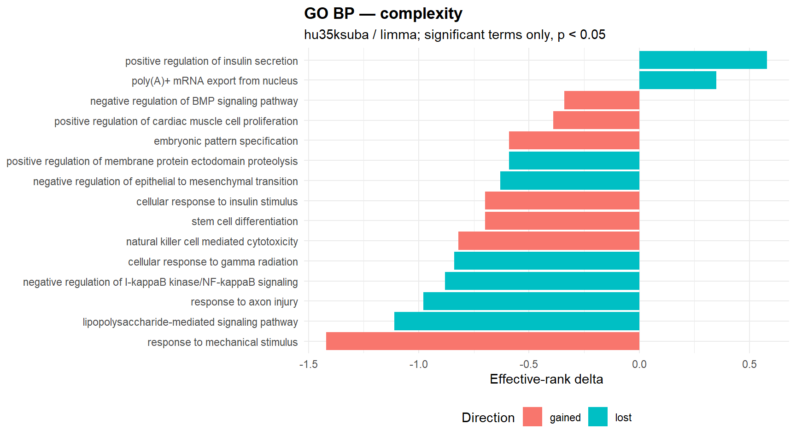
18.3.0.0.3 Entropy signal plot
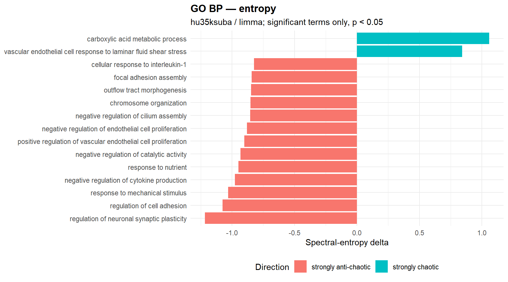
18.3.0.0.4 Significant complexity terms
| gene_set | semantic_block | n_shared_probes | effrank_delta | kappa_delta | direction | p_perm | status |
|---|---|---|---|---|---|---|---|
| lipopolysaccharide-mediated signaling pathway | cellular response to lipid | 8 | -1.110 | -2259.610 | lost | <0.001 | ok |
| regulation of embryonic development | embryo development | 14 | -0.340 | 503.210 | gained | <0.001 | ok |
| positive regulation of filopodium assembly | regulation of plasma membrane bounded cell projection organization | 5 | -0.330 | 471.490 | gained | <0.001 | ok |
| G1/S transition of mitotic cell cycle | cell cycle phase transition | 16 | -0.290 | -407.910 | lost | <0.001 | ok |
| cellular response to ionizing radiation | response to radiation | 5 | -0.260 | 481.070 | gained | <0.001 | ok |
| positive regulation of nuclear-transcribed mRNA poly(A) tail shortening | mRNA catabolic process | 6 | -0.170 | 868.370 | gained | <0.001 | ok |
| mitochondrial fusion | mitochondrion organization | 8 | 0.070 | 8075.390 | gained | <0.001 | ok |
| retinoid metabolic process | lipid metabolic process | 10 | 0.000 | 46734.180 | gained | <0.001 | ok |
| response to mechanical stimulus | response to abiotic stimulus | 5 | -1.420 | 170.210 | gained | 0.010 | ok |
| negative regulation of I-kappaB kinase/NF-kappaB signaling | negative regulation of intracellular signal transduction | 20 | -0.880 | -215.120 | lost | 0.010 | ok |
| cellular response to insulin stimulus | cellular response to nitrogen compound | 12 | -0.700 | 1512.800 | gained | 0.010 | ok |
| embryonic pattern specification | embryo development | 6 | -0.590 | 447.640 | gained | 0.010 | ok |
| mRNA catabolic process | mRNA catabolic process | 6 | 0.310 | 876.500 | gained | 0.010 | ok |
| positive regulation of vascular associated smooth muscle cell proliferation | positive regulation of cell population proliferation | 8 | -0.240 | -3154.670 | lost | 0.010 | ok |
| positive regulation of proteasomal ubiquitin-dependent protein catabolic process | positive regulation of catabolic process | 21 | 0.200 | -209.670 | lost | 0.010 | ok |
18.3.0.0.5 Significant entropy terms
| gene_set | semantic_block | n_shared_probes | spectral_delta | shannon_delta | spectral_direction | p_perm_spectral | p_perm_shannon | status |
|---|---|---|---|---|---|---|---|---|
| regulation of neuronal synaptic plasticity | modulation of chemical synaptic transmission | 7 | -1.217 | -0.002 | strongly anti-chaotic | <0.001 | NA | ok |
| regulation of cell adhesion | regulation of cell adhesion | 9 | -1.076 | 0.000 | strongly anti-chaotic | <0.001 | NA | ok |
| response to mechanical stimulus | response to abiotic stimulus | 5 | -1.030 | 0.001 | strongly anti-chaotic | <0.001 | NA | ok |
| response to nutrient | response to chemical | 8 | -0.949 | -0.003 | strongly anti-chaotic | <0.001 | NA | ok |
| negative regulation of catalytic activity | regulation of catalytic activity | 7 | -0.931 | 0.003 | strongly anti-chaotic | <0.001 | NA | ok |
| positive regulation of vascular endothelial cell proliferation | positive regulation of cell population proliferation | 6 | -0.900 | -0.007 | strongly anti-chaotic | <0.001 | NA | ok |
| outflow tract morphogenesis | heart morphogenesis | 15 | -0.847 | -0.005 | strongly anti-chaotic | <0.001 | NA | ok |
| vascular endothelial cell response to laminar fluid shear stress | cellular response to stress | 5 | 0.842 | 0.008 | strongly chaotic | <0.001 | NA | ok |
| focal adhesion assembly | cell junction assembly | 5 | -0.842 | -0.007 | strongly anti-chaotic | <0.001 | NA | ok |
| regulation of multicellular organismal process | regulation of multicellular organismal process | 9 | -0.820 | 0.000 | strongly anti-chaotic | <0.001 | NA | ok |
| negative regulation of extrinsic apoptotic signaling pathway via death domain receptors | apoptotic signaling pathway | 6 | -0.817 | -0.011 | strongly anti-chaotic | <0.001 | NA | ok |
| actin filament bundle assembly | actin cytoskeleton organization | 7 | -0.793 | 0.001 | strongly anti-chaotic | <0.001 | NA | ok |
| response to axon injury | response to wounding | 6 | -0.781 | -0.001 | strongly anti-chaotic | <0.001 | NA | ok |
| outflow tract septum morphogenesis | heart morphogenesis | 6 | -0.777 | -0.004 | strongly anti-chaotic | <0.001 | NA | ok |
| positive regulation of lipid biosynthetic process | regulation of lipid metabolic process | 5 | -0.765 | 0.002 | strongly anti-chaotic | <0.001 | NA | ok |
18.3.0.0.6 Terms significant in both engines
| gene_set | semantic_block | n_shared_probes | complexity_effrank_delta | complexity_direction | complexity_p_perm | entropy_spectral_delta | entropy_spectral_direction | entropy_p_perm_spectral | joint_rank_score |
|---|---|---|---|---|---|---|---|---|---|
| lipopolysaccharide-mediated signaling pathway | cellular response to lipid | 8 | -1.110 | lost | <0.001 | -0.751 | strongly anti-chaotic | <0.001 | 615.305 |
| positive regulation of filopodium assembly | regulation of plasma membrane bounded cell projection organization | 5 | -0.330 | gained | <0.001 | -0.382 | mildly anti-chaotic | <0.001 | 615.305 |
| response to mechanical stimulus | response to abiotic stimulus | 5 | -1.420 | gained | 0.010 | -1.030 | strongly anti-chaotic | <0.001 | 309.653 |
| cellular response to insulin stimulus | cellular response to nitrogen compound | 12 | -0.700 | gained | 0.010 | -0.494 | mildly anti-chaotic | <0.001 | 309.653 |
| negative regulation of I-kappaB kinase/NF-kappaB signaling | negative regulation of intracellular signal transduction | 20 | -0.880 | lost | 0.010 | -0.649 | strongly anti-chaotic | <0.001 | 309.653 |
| positive regulation of stress fiber assembly | regulation of cytoskeleton organization | 11 | -0.330 | gained | 0.020 | -0.355 | mildly anti-chaotic | <0.001 | 309.352 |
| response to axon injury | response to wounding | 6 | -0.980 | lost | 0.030 | -0.781 | strongly anti-chaotic | <0.001 | 309.176 |
| cellular response to gamma radiation | response to radiation | 9 | -0.840 | lost | 0.030 | -0.713 | strongly anti-chaotic | 0.010 | 3.523 |
| negative regulation of epithelial to mesenchymal transition | mesenchyme development | 11 | -0.630 | lost | 0.020 | -0.561 | strongly anti-chaotic | 0.030 | 3.222 |
| stem cell differentiation | cell differentiation | 11 | -0.700 | gained | 0.020 | -0.553 | strongly anti-chaotic | 0.030 | 3.222 |
| positive regulation of cardiac muscle cell proliferation | developmental growth | 7 | -0.390 | gained | 0.040 | -0.386 | mildly anti-chaotic | 0.030 | 2.921 |
18.3.0.0.7 GO semantic clusters
| semantic_cluster_id | semantic_block_name | n_rows | n_terms | n_sig_complexity | n_sig_entropy_spectral | mean_shared_probes |
|---|---|---|---|---|---|---|
| BP_GO_0009314_12 | response to radiation | 6 | 3 | 2 | 2 | 6.333 |
| BP_GO_0035556_1 | intracellular signal transduction | 12 | 6 | 0 | 3 | 22.500 |
| BP_GO_0050804_1 | modulation of chemical synaptic transmission | 8 | 4 | 0 | 3 | 8.500 |
| BP_GO_0030036_2 | actin cytoskeleton organization | 6 | 3 | 0 | 3 | 16.000 |
| BP_GO_0060485_6 | mesenchyme development | 6 | 3 | 1 | 2 | 10.667 |
| BP_GO_0030154_2 | cell differentiation | 4 | 2 | 1 | 2 | 95.500 |
| BP_GO_0051493_4 | regulation of cytoskeleton organization | 4 | 2 | 1 | 2 | 9.500 |
| BP_GO_0071396_1 | cellular response to lipid | 4 | 2 | 1 | 2 | 14.000 |
| BP_GO_0007186_2 | G protein-coupled receptor signaling pathway | 14 | 7 | 1 | 1 | 19.000 |
| BP_GO_0051254_1 | positive regulation of RNA metabolic process | 12 | 6 | 0 | 2 | 70.667 |
| BP_GO_1902533_1 | positive regulation of intracellular signal transduction | 12 | 6 | 0 | 2 | 21.833 |
| BP_GO_0022603_2 | regulation of anatomical structure morphogenesis | 10 | 5 | 0 | 2 | 15.800 |
| BP_GO_0051241_1 | negative regulation of multicellular organismal process | 10 | 5 | 0 | 2 | 8.200 |
| BP_GO_1902532_1 | negative regulation of intracellular signal transduction | 10 | 5 | 1 | 1 | 11.400 |
| BP_GO_0006396_1 | RNA processing | 8 | 4 | 0 | 2 | 34.250 |
18.3.0.0.8 Context summary
| engine | n_rows | n_gene_sets | n_significant_complexity | n_significant_entropy_spectral | median_shared_probes |
|---|---|---|---|---|---|
| complexity | 420 | 420 | 30 | 0 | 9.000 |
| entropy | 420 | 420 | 0 | 102 | 9.000 |
18.3.0.0.9 Complexity signal plot
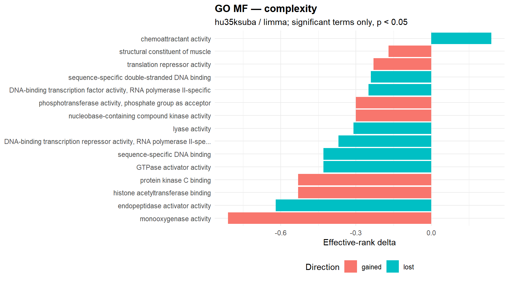
18.3.0.0.10 Entropy signal plot
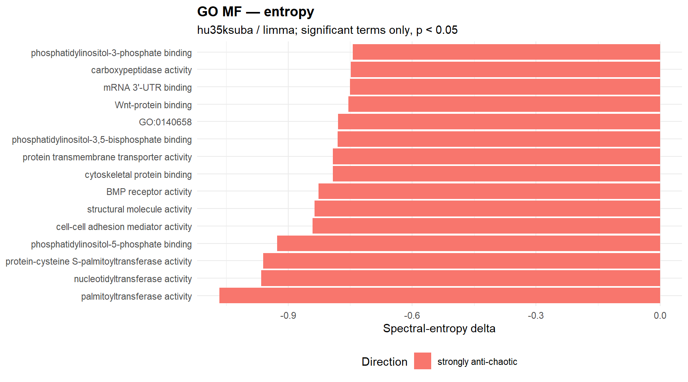
18.3.0.0.11 Significant complexity terms
| gene_set | semantic_block | n_shared_probes | effrank_delta | kappa_delta | direction | p_perm | status |
|---|---|---|---|---|---|---|---|
| monooxygenase activity | oxidoreductase activity | 13 | -0.810 | 968.490 | gained | <0.001 | ok |
| histone acetyltransferase binding | enzyme binding | 7 | -0.530 | 2215.400 | gained | <0.001 | ok |
| sequence-specific DNA binding | DNA binding | 76 | -0.430 | -54.290 | lost | <0.001 | ok |
| lyase activity | catalytic activity | 22 | -0.310 | -160.750 | lost | <0.001 | ok |
| chemoattractant activity | molecular function regulator activity | 5 | 0.240 | -260.310 | lost | <0.001 | ok |
| translation repressor activity | molecular_function | 7 | -0.230 | 1754.710 | gained | <0.001 | ok |
| antiporter activity | active transmembrane transporter activity | 9 | -0.080 | 87010.090 | gained | <0.001 | ok |
| pyridoxal phosphate binding | anion binding | 9 | -0.060 | 216602.400 | gained | <0.001 | ok |
| endopeptidase activator activity | enzyme regulator activity | 5 | -0.620 | -179.930 | lost | 0.010 | ok |
| GO:0140002 | protein-macromolecule adaptor activity | 8 | -0.090 | -3368.380 | lost | 0.010 | ok |
| endopeptidase activity | peptidase activity | 21 | -0.020 | -158.810 | lost | 0.010 | ok |
| protein kinase C binding | enzyme binding | 9 | -0.530 | 33801.950 | gained | 0.020 | ok |
| GTPase activator activity | enzyme regulator activity | 49 | -0.430 | -70.310 | lost | 0.020 | ok |
| snoRNA binding | RNA binding | 7 | -0.150 | 1382.310 | gained | 0.020 | ok |
| H3K9me3 modified histone binding | protein-macromolecule adaptor activity | 7 | -0.100 | 1836.690 | gained | 0.020 | ok |
18.3.0.0.12 Significant entropy terms
| gene_set | semantic_block | n_shared_probes | spectral_delta | shannon_delta | spectral_direction | p_perm_spectral | p_perm_shannon | status |
|---|---|---|---|---|---|---|---|---|
| palmitoyltransferase activity | acyltransferase activity | 5 | -1.067 | -0.002 | strongly anti-chaotic | <0.001 | NA | ok |
| nucleotidyltransferase activity | transferase activity, transferring phosphorus-containing groups | 11 | -0.965 | -0.003 | strongly anti-chaotic | <0.001 | NA | ok |
| protein-cysteine S-palmitoyltransferase activity | acyltransferase activity | 6 | -0.961 | -0.001 | strongly anti-chaotic | <0.001 | NA | ok |
| BMP receptor activity | protein serine/threonine kinase activity | 5 | -0.827 | -0.003 | strongly anti-chaotic | <0.001 | NA | ok |
| protein transmembrane transporter activity | transmembrane transporter activity | 7 | -0.792 | -0.002 | strongly anti-chaotic | <0.001 | NA | ok |
| mRNA 3’-UTR binding | RNA binding | 20 | -0.750 | -0.005 | strongly anti-chaotic | <0.001 | NA | ok |
| carboxypeptidase activity | peptidase activity | 7 | -0.749 | 0.000 | strongly anti-chaotic | <0.001 | NA | ok |
| monooxygenase activity | oxidoreductase activity | 13 | -0.717 | -0.001 | strongly anti-chaotic | <0.001 | NA | ok |
| serine-type peptidase activity | peptidase activity | 19 | -0.679 | 0.002 | strongly anti-chaotic | <0.001 | NA | ok |
| heme binding | binding | 15 | -0.668 | -0.001 | strongly anti-chaotic | <0.001 | NA | ok |
| extracellular matrix structural constituent | molecular_function | 12 | -0.616 | 0.004 | strongly anti-chaotic | <0.001 | NA | ok |
| RNA stem-loop binding | RNA binding | 5 | -0.559 | 0.001 | strongly anti-chaotic | <0.001 | NA | ok |
| serine-type endopeptidase activity | peptidase activity | 18 | -0.530 | 0.004 | strongly anti-chaotic | <0.001 | NA | ok |
| beta-tubulin binding | cytoskeletal protein binding | 15 | -0.490 | 0.003 | mildly anti-chaotic | <0.001 | NA | ok |
| phospholipid binding | lipid binding | 24 | -0.479 | 0.003 | mildly anti-chaotic | <0.001 | NA | ok |
18.3.0.0.13 Terms significant in both engines
| gene_set | semantic_block | n_shared_probes | complexity_effrank_delta | complexity_direction | complexity_p_perm | entropy_spectral_delta | entropy_spectral_direction | entropy_p_perm_spectral | joint_rank_score |
|---|---|---|---|---|---|---|---|---|---|
| lyase activity | catalytic activity | 22 | -0.310 | lost | <0.001 | -0.293 | mildly anti-chaotic | <0.001 | 615.305 |
| monooxygenase activity | oxidoreductase activity | 13 | -0.810 | gained | <0.001 | -0.717 | strongly anti-chaotic | <0.001 | 615.305 |
| histone acetyltransferase binding | enzyme binding | 7 | -0.530 | gained | <0.001 | -0.446 | mildly anti-chaotic | 0.020 | 309.352 |
| sequence-specific DNA binding | DNA binding | 76 | -0.430 | lost | <0.001 | -0.350 | mildly anti-chaotic | 0.030 | 309.176 |
| protein kinase C binding | enzyme binding | 9 | -0.530 | gained | 0.020 | -0.438 | mildly anti-chaotic | 0.020 | 3.398 |
| GTPase activator activity | enzyme regulator activity | 49 | -0.430 | lost | 0.020 | -0.364 | mildly anti-chaotic | 0.030 | 3.222 |
18.3.0.0.14 GO semantic clusters
| semantic_cluster_id | semantic_block_name | n_rows | n_terms | n_sig_complexity | n_sig_entropy_spectral | mean_shared_probes |
|---|---|---|---|---|---|---|
| MF_GO_0003677_13 | DNA binding | 4 | 2 | 1 | 2 | 42.500 |
| MF_GO_0003723_1 | RNA binding | 10 | 5 | 0 | 2 | 83.600 |
| MF_GO_0019899_3 | enzyme binding | 10 | 5 | 1 | 1 | 26.000 |
| MF_GO_0003677_3 | DNA binding | 8 | 4 | 0 | 2 | 34.000 |
| MF_GO_0004672_1 | protein kinase activity | 8 | 4 | 1 | 1 | 31.750 |
| MF_GO_0008233_1 | peptidase activity | 8 | 4 | 1 | 1 | 32.250 |
| MF_GO_0008289_14 | lipid binding | 8 | 4 | 0 | 2 | 7.000 |
| MF_GO_0043169_1 | cation binding | 8 | 4 | 0 | 2 | 189.500 |
| MF_GO_0008092_4 | cytoskeletal protein binding | 6 | 3 | 0 | 2 | 10.667 |
| MF_GO_0036094_5 | small molecule binding | 6 | 3 | 1 | 1 | 11.000 |
| MF_GO_0003723_4 | RNA binding | 4 | 2 | 0 | 2 | 40.500 |
| MF_GO_0003824_13 | catalytic activity | 4 | 2 | 1 | 1 | 19.000 |
| MF_GO_0005515_55 | protein binding | 4 | 2 | 0 | 2 | 48.500 |
| MF_GO_0008092_2 | cytoskeletal protein binding | 4 | 2 | 0 | 2 | 9.000 |
| MF_GO_0008233_7 | peptidase activity | 4 | 2 | 0 | 2 | 18.500 |
18.3.0.0.15 Context summary
| engine | n_rows | n_gene_sets | n_significant_complexity | n_significant_entropy_spectral | median_shared_probes |
|---|---|---|---|---|---|
| complexity | 56 | 56 | 1 | 0 | 21.500 |
| entropy | 56 | 56 | 0 | 21 | 21.500 |
18.3.0.0.16 Complexity signal plot
18.3.0.0.17 Entropy signal plot
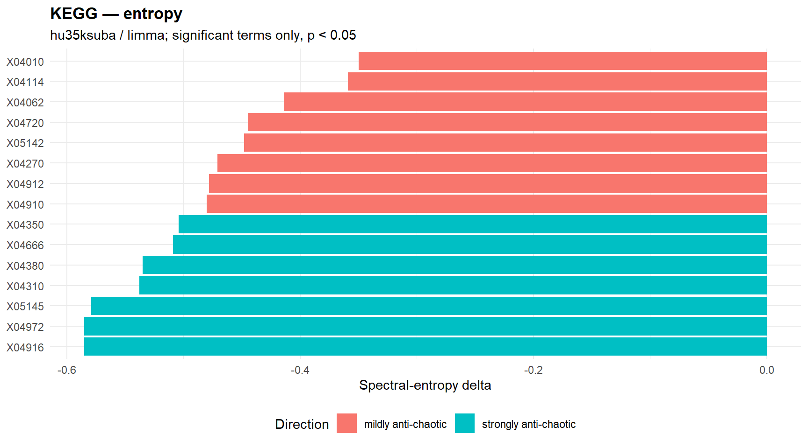
18.3.0.0.18 Significant complexity terms
| gene_set | semantic_block | n_shared_probes | effrank_delta | kappa_delta | direction | p_perm | status |
|---|---|---|---|---|---|---|---|
| X04662 | NA | 10 | -0.220 | -2377.640 | lost | 0.030 | ok |
18.3.0.0.19 Significant entropy terms
| gene_set | semantic_block | n_shared_probes | spectral_delta | shannon_delta | spectral_direction | p_perm_spectral | p_perm_shannon | status |
|---|---|---|---|---|---|---|---|---|
| X04916 | NA | 16 | -0.585 | -0.001 | strongly anti-chaotic | <0.001 | NA | ok |
| X04380 | NA | 24 | -0.535 | 0.000 | strongly anti-chaotic | <0.001 | NA | ok |
| X05145 | NA | 20 | -0.579 | 0.000 | strongly anti-chaotic | 0.010 | NA | ok |
| X04912 | NA | 19 | -0.478 | 0.000 | mildly anti-chaotic | 0.010 | NA | ok |
| X04662 | NA | 10 | -0.267 | -0.003 | mildly anti-chaotic | 0.010 | NA | ok |
| X04310 | NA | 25 | -0.538 | -0.003 | strongly anti-chaotic | 0.020 | NA | ok |
| X04666 | NA | 15 | -0.509 | -0.001 | strongly anti-chaotic | 0.020 | NA | ok |
| X04910 | NA | 21 | -0.480 | 0.002 | mildly anti-chaotic | 0.020 | NA | ok |
| X04114 | NA | 20 | -0.359 | 0.003 | mildly anti-chaotic | 0.020 | NA | ok |
| X04650 | NA | 18 | -0.239 | 0.004 | mildly anti-chaotic | 0.020 | NA | ok |
| X04972 | NA | 12 | -0.585 | 0.000 | strongly anti-chaotic | 0.030 | NA | ok |
| X04350 | NA | 16 | -0.504 | 0.000 | strongly anti-chaotic | 0.030 | NA | ok |
| X04270 | NA | 22 | -0.471 | 0.008 | mildly anti-chaotic | 0.030 | NA | ok |
| X04720 | NA | 15 | -0.445 | 0.004 | mildly anti-chaotic | 0.030 | NA | ok |
| X04010 | NA | 43 | -0.350 | 0.002 | mildly anti-chaotic | 0.030 | NA | ok |
18.3.0.0.20 Terms significant in both engines
| gene_set | semantic_block | n_shared_probes | complexity_effrank_delta | complexity_direction | complexity_p_perm | entropy_spectral_delta | entropy_spectral_direction | entropy_p_perm_spectral | joint_rank_score |
|---|---|---|---|---|---|---|---|---|---|
| X04662 | NA | 10 | -0.220 | lost | 0.030 | -0.267 | mildly anti-chaotic | 0.010 | 3.523 |
18.3.0.0.21 Context summary
| engine | n_rows | n_gene_sets | n_significant_complexity | n_significant_entropy_spectral | median_shared_probes |
|---|---|---|---|---|---|
| complexity | 13 | 13 | 0 | 0 | 44.000 |
| entropy | 13 | 13 | 0 | 5 | 44.000 |
18.3.0.0.22 Complexity signal plot
No significant complexity terms available for plotting.
18.3.0.0.23 Entropy signal plot
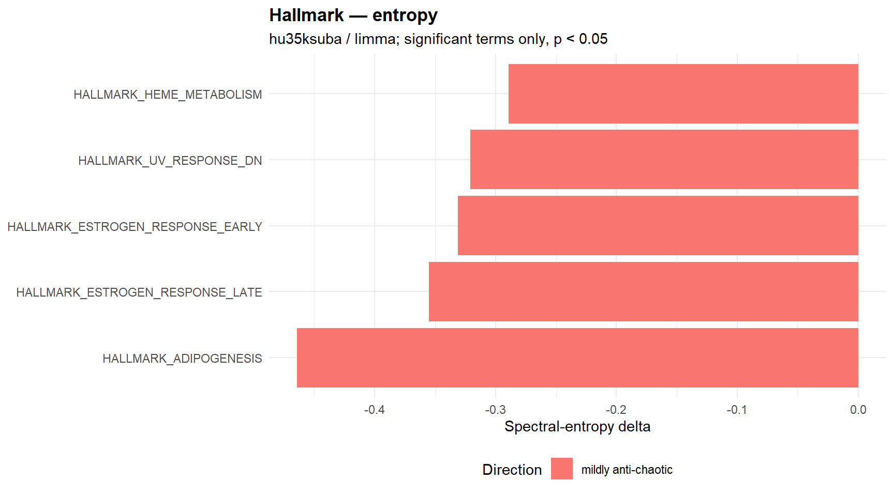
18.3.0.0.24 Significant complexity terms
No significant warehouse rows available for this section.
18.3.0.0.25 Significant entropy terms
| gene_set | semantic_block | n_shared_probes | spectral_delta | shannon_delta | spectral_direction | p_perm_spectral | p_perm_shannon | status |
|---|---|---|---|---|---|---|---|---|
| HALLMARK_ESTROGEN_RESPONSE_LATE | NA | 43 | -0.355 | 0.006 | mildly anti-chaotic | <0.001 | NA | ok |
| HALLMARK_ESTROGEN_RESPONSE_EARLY | NA | 51 | -0.331 | 0.005 | mildly anti-chaotic | 0.020 | NA | ok |
| HALLMARK_ADIPOGENESIS | NA | 41 | -0.464 | 0.003 | mildly anti-chaotic | 0.030 | NA | ok |
| HALLMARK_HEME_METABOLISM | NA | 46 | -0.289 | 0.002 | mildly anti-chaotic | 0.030 | NA | ok |
| HALLMARK_UV_RESPONSE_DN | NA | 44 | -0.321 | 0.005 | mildly anti-chaotic | 0.040 | NA | ok |
18.3.0.0.26 Terms significant in both engines
No significant warehouse rows available for this section.
18.3.0.0.27 Context summary
| engine | n_rows | n_gene_sets | n_significant_complexity | n_significant_entropy_spectral | median_shared_probes |
|---|---|---|---|---|---|
| complexity | 1054 | 1054 | 54 | 0 | 8.000 |
| entropy | 1054 | 1054 | 0 | 180 | 8.000 |
18.3.0.0.28 Complexity signal plot
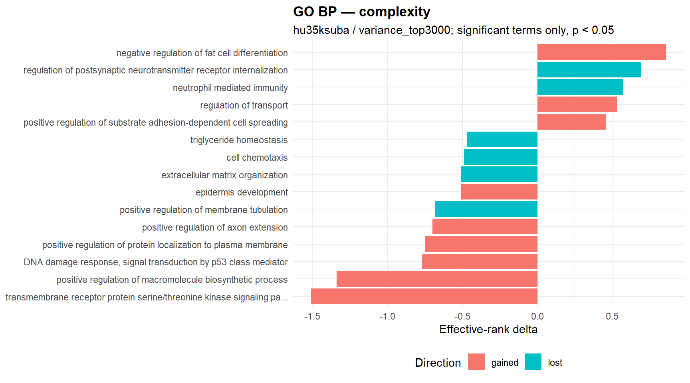
18.3.0.0.29 Entropy signal plot
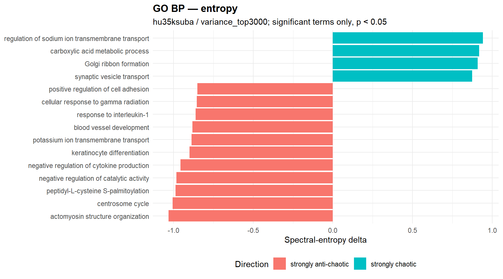
18.3.0.0.30 Significant complexity terms
| gene_set | semantic_block | n_shared_probes | effrank_delta | kappa_delta | direction | p_perm | status |
|---|---|---|---|---|---|---|---|
| DNA damage response, signal transduction by p53 class mediator | DNA damage response | 10 | -0.770 | 3026.200 | gained | <0.001 | ok |
| neutrophil mediated immunity | leukocyte mediated immunity | 5 | 0.570 | -441.940 | lost | <0.001 | ok |
| extracellular matrix organization | cellular component organization | 13 | -0.510 | -577.960 | lost | <0.001 | ok |
| positive regulation of neuron differentiation | positive regulation of cell differentiation | 5 | -0.390 | -394.510 | lost | <0.001 | ok |
| positive regulation of keratinocyte proliferation | positive regulation of cell population proliferation | 5 | -0.350 | -433.530 | lost | <0.001 | ok |
| negative regulation of interleukin-12 production | negative regulation of multicellular organismal process | 6 | -0.340 | -400.700 | lost | <0.001 | ok |
| central nervous system development | central nervous system development | 23 | -0.270 | -187.010 | lost | <0.001 | ok |
| positive regulation of Notch signaling pathway | positive regulation of signal transduction | 11 | -0.270 | 2296.470 | gained | <0.001 | ok |
| spermatogenesis | reproductive process | 43 | 0.180 | -74.130 | lost | <0.001 | ok |
| positive regulation of neutrophil chemotaxis | leukocyte migration | 5 | -0.160 | 270.710 | gained | <0.001 | ok |
| cellular response to DNA damage stimulus | DNA damage response | 88 | 0.160 | -43.800 | lost | <0.001 | ok |
| embryo implantation | reproductive process | 6 | -0.110 | -473.830 | lost | <0.001 | ok |
| microtubule cytoskeleton organization | microtubule cytoskeleton organization | 22 | 0.000 | 109.020 | gained | <0.001 | ok |
| positive regulation of axon extension | positive regulation of cell development | 7 | -0.700 | 819.720 | gained | 0.010 | ok |
| epidermis development | tissue development | 9 | -0.510 | 307016.640 | gained | 0.010 | ok |
18.3.0.0.31 Significant entropy terms
| gene_set | semantic_block | n_shared_probes | spectral_delta | shannon_delta | spectral_direction | p_perm_spectral | p_perm_shannon | status |
|---|---|---|---|---|---|---|---|---|
| centrosome cycle | microtubule cytoskeleton organization | 5 | -1.005 | 0.002 | strongly anti-chaotic | <0.001 | NA | ok |
| peptidyl-L-cysteine S-palmitoylation | protein modification process | 5 | -0.986 | -0.002 | strongly anti-chaotic | <0.001 | NA | ok |
| negative regulation of catalytic activity | regulation of catalytic activity | 8 | -0.982 | 0.003 | strongly anti-chaotic | <0.001 | NA | ok |
| regulation of sodium ion transmembrane transport | regulation of metal ion transport | 7 | 0.941 | 0.018 | strongly chaotic | <0.001 | NA | ok |
| keratinocyte differentiation | epithelial cell differentiation | 6 | -0.899 | 0.003 | strongly anti-chaotic | <0.001 | NA | ok |
| blood vessel development | blood vessel development | 8 | -0.881 | -0.004 | strongly anti-chaotic | <0.001 | NA | ok |
| synaptic vesicle transport | establishment of organelle localization | 6 | 0.874 | 0.003 | strongly chaotic | <0.001 | NA | ok |
| positive regulation of cell adhesion | positive regulation of cell adhesion | 8 | -0.849 | -0.001 | strongly anti-chaotic | <0.001 | NA | ok |
| positive regulation of intracellular signal transduction | positive regulation of intracellular signal transduction | 8 | -0.834 | -0.003 | strongly anti-chaotic | <0.001 | NA | ok |
| regulation of DNA strand elongation | regulation of DNA metabolic process | 6 | 0.807 | 0.009 | strongly chaotic | <0.001 | NA | ok |
| protein dephosphorylation | protein modification process | 19 | -0.796 | -0.001 | strongly anti-chaotic | <0.001 | NA | ok |
| positive regulation of osteoblast differentiation | positive regulation of cell differentiation | 16 | -0.790 | -0.001 | strongly anti-chaotic | <0.001 | NA | ok |
| negative regulation of receptor signaling pathway via JAK-STAT | negative regulation of signal transduction | 7 | -0.784 | -0.002 | strongly anti-chaotic | <0.001 | NA | ok |
| negative regulation of endothelial cell proliferation | regulation of cell population proliferation | 11 | -0.767 | -0.007 | strongly anti-chaotic | <0.001 | NA | ok |
| regulation of cytoskeleton organization | regulation of cytoskeleton organization | 5 | -0.761 | -0.001 | strongly anti-chaotic | <0.001 | NA | ok |
18.3.0.0.32 Terms significant in both engines
| gene_set | semantic_block | n_shared_probes | complexity_effrank_delta | complexity_direction | complexity_p_perm | entropy_spectral_delta | entropy_spectral_direction | entropy_p_perm_spectral | joint_rank_score |
|---|---|---|---|---|---|---|---|---|---|
| DNA damage response, signal transduction by p53 class mediator | DNA damage response | 10 | -0.770 | gained | <0.001 | -0.572 | strongly anti-chaotic | 0.010 | 309.653 |
| negative regulation of interleukin-12 production | negative regulation of multicellular organismal process | 6 | -0.340 | lost | <0.001 | -0.305 | mildly anti-chaotic | 0.020 | 309.352 |
| positive regulation of protein localization to plasma membrane | regulation of cellular localization | 7 | -0.750 | gained | 0.020 | -0.511 | strongly anti-chaotic | <0.001 | 309.352 |
| positive regulation of membrane tubulation | endomembrane system organization | 5 | -0.680 | lost | 0.030 | -0.549 | strongly anti-chaotic | <0.001 | 309.176 |
| epidermis development | tissue development | 9 | -0.510 | gained | 0.010 | -0.499 | mildly anti-chaotic | 0.010 | 4.000 |
| positive regulation of macromolecule biosynthetic process | positive regulation of macromolecule biosynthetic process | 5 | -1.340 | gained | 0.020 | -0.696 | strongly anti-chaotic | 0.010 | 3.699 |
| positive regulation of axon extension | positive regulation of cell development | 7 | -0.700 | gained | 0.010 | -0.581 | strongly anti-chaotic | 0.030 | 3.523 |
| transmembrane receptor protein serine/threonine kinase signaling pathway | enzyme-linked receptor protein signaling pathway | 7 | -1.510 | gained | 0.040 | -0.786 | strongly anti-chaotic | 0.010 | 3.398 |
| cell chemotaxis | chemotaxis | 7 | -0.490 | lost | 0.040 | -0.382 | mildly anti-chaotic | 0.030 | 2.921 |
18.3.0.0.33 GO semantic clusters
| semantic_cluster_id | semantic_block_name | n_rows | n_terms | n_sig_complexity | n_sig_entropy_spectral | mean_shared_probes |
|---|---|---|---|---|---|---|
| BP_GO_0051241_1 | negative regulation of multicellular organismal process | 10 | 5 | 1 | 3 | 8.400 |
| BP_GO_0035556_1 | intracellular signal transduction | 12 | 6 | 2 | 1 | 22.500 |
| BP_GO_0019221_4 | cytokine-mediated signaling pathway | 10 | 5 | 1 | 2 | 7.200 |
| BP_GO_0060485_6 | mesenchyme development | 6 | 3 | 0 | 3 | 9.667 |
| BP_GO_1902531_1 | regulation of intracellular signal transduction | 18 | 9 | 1 | 1 | 7.222 |
| BP_GO_0007166_1 | cell surface receptor signaling pathway | 14 | 7 | 1 | 1 | 15.143 |
| BP_GO_1902533_1 | positive regulation of intracellular signal transduction | 14 | 7 | 0 | 2 | 17.286 |
| BP_GO_0006402_3 | mRNA catabolic process | 10 | 5 | 0 | 2 | 9.600 |
| BP_GO_0048667_1 | cell morphogenesis involved in neuron differentiation | 8 | 4 | 0 | 2 | 13.000 |
| BP_GO_0006281_1 | DNA repair | 6 | 3 | 1 | 1 | 26.000 |
| BP_GO_0007167_1 | enzyme-linked receptor protein signaling pathway | 6 | 3 | 1 | 1 | 8.333 |
| BP_GO_0019221_1 | cytokine-mediated signaling pathway | 6 | 3 | 0 | 2 | 8.333 |
| BP_GO_0040007_1 | growth | 6 | 3 | 0 | 2 | 13.000 |
| BP_GO_0071345_1 | cellular response to cytokine stimulus | 6 | 3 | 0 | 2 | 8.667 |
| BP_GO_0120035_2 | regulation of plasma membrane bounded cell projection organization | 6 | 3 | 1 | 1 | 10.667 |
18.3.0.0.34 Context summary
| engine | n_rows | n_gene_sets | n_significant_complexity | n_significant_entropy_spectral | median_shared_probes |
|---|---|---|---|---|---|
| complexity | 384 | 384 | 21 | 0 | 9.000 |
| entropy | 384 | 384 | 0 | 70 | 9.000 |
18.3.0.0.35 Complexity signal plot
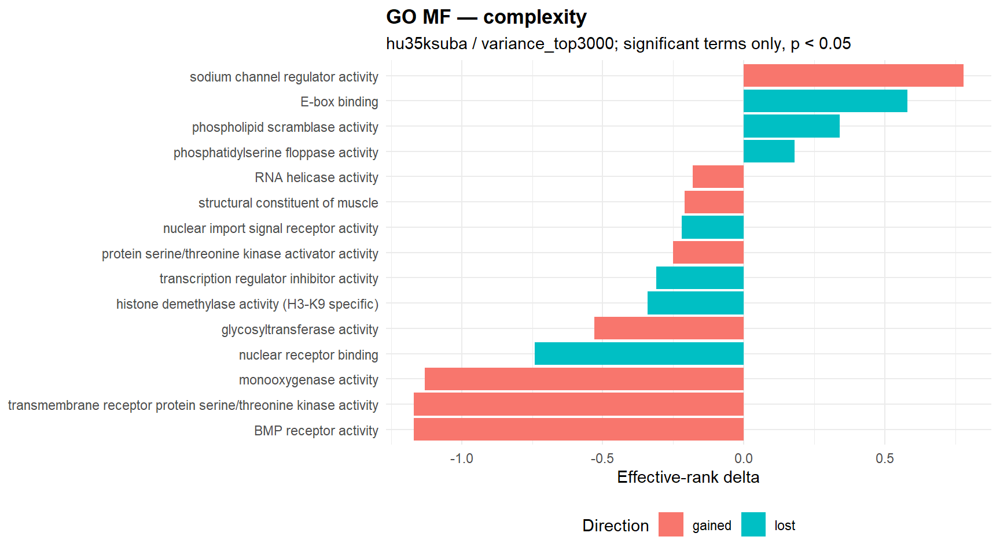
18.3.0.0.36 Entropy signal plot
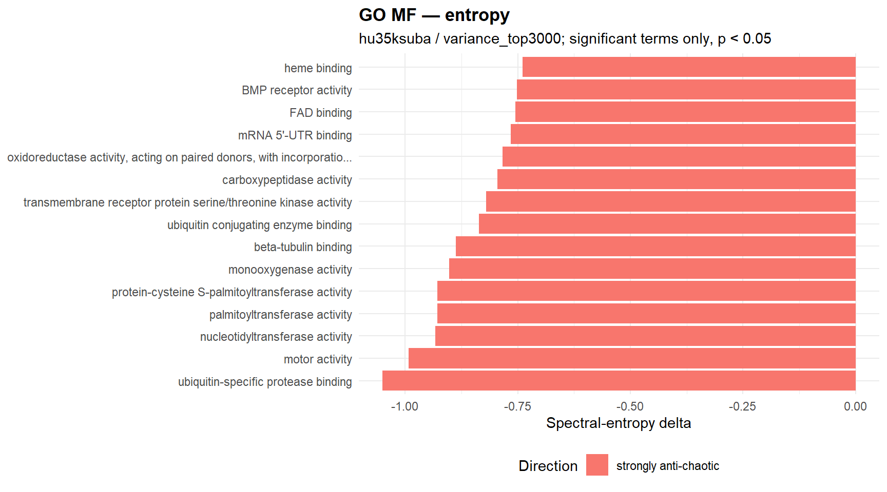
18.3.0.0.37 Significant complexity terms
| gene_set | semantic_block | n_shared_probes | effrank_delta | kappa_delta | direction | p_perm | status |
|---|---|---|---|---|---|---|---|
| nuclear receptor binding | transcription factor binding | 6 | -0.740 | -485.250 | lost | <0.001 | ok |
| nuclear import signal receptor activity | molecular_function | 8 | -0.220 | -9180.860 | lost | <0.001 | ok |
| structural constituent of muscle | molecular_function | 6 | -0.210 | 799.710 | gained | <0.001 | ok |
| cysteine-type endopeptidase inhibitor activity involved in apoptotic process | enzyme regulator activity | 6 | 0.050 | -338.440 | lost | <0.001 | ok |
| GO:0140002 | protein-macromolecule adaptor activity | 5 | 0.000 | -851.070 | lost | <0.001 | ok |
| protein serine/threonine kinase activator activity | enzyme regulator activity | 7 | -0.250 | 305.820 | gained | 0.010 | ok |
| RNA helicase activity | catalytic activity | 15 | -0.180 | 343.030 | gained | 0.010 | ok |
| ephrin receptor binding | signaling receptor binding | 6 | -0.010 | -366.040 | lost | 0.010 | ok |
| phospholipid scramblase activity | transporter activity | 7 | 0.340 | -660.940 | lost | 0.020 | ok |
| protein disulfide isomerase activity | catalytic activity, acting on a protein | 5 | 0.110 | -329.240 | lost | 0.020 | ok |
| transmembrane receptor protein serine/threonine kinase activity | protein serine/threonine kinase activity | 6 | -1.170 | 1371.350 | gained | 0.030 | ok |
| BMP receptor activity | protein serine/threonine kinase activity | 5 | -1.170 | 104.750 | gained | 0.030 | ok |
| E-box binding | DNA binding | 9 | 0.580 | -37486.050 | lost | 0.030 | ok |
| histone demethylase activity (H3-K9 specific) | catalytic activity, acting on a protein | 6 | -0.340 | -233.900 | lost | 0.030 | ok |
| phosphatidylserine floppase activity | transporter activity | 5 | 0.180 | -180.780 | lost | 0.030 | ok |
18.3.0.0.38 Significant entropy terms
| gene_set | semantic_block | n_shared_probes | spectral_delta | shannon_delta | spectral_direction | p_perm_spectral | p_perm_shannon | status |
|---|---|---|---|---|---|---|---|---|
| nucleotidyltransferase activity | transferase activity, transferring phosphorus-containing groups | 9 | -0.933 | -0.004 | strongly anti-chaotic | <0.001 | NA | ok |
| palmitoyltransferase activity | acyltransferase activity | 5 | -0.928 | -0.003 | strongly anti-chaotic | <0.001 | NA | ok |
| protein-cysteine S-palmitoyltransferase activity | acyltransferase activity | 5 | -0.928 | -0.003 | strongly anti-chaotic | <0.001 | NA | ok |
| beta-tubulin binding | cytoskeletal protein binding | 13 | -0.887 | -0.001 | strongly anti-chaotic | <0.001 | NA | ok |
| ubiquitin conjugating enzyme binding | enzyme binding | 6 | -0.836 | -0.004 | strongly anti-chaotic | <0.001 | NA | ok |
| transmembrane receptor protein serine/threonine kinase activity | protein serine/threonine kinase activity | 6 | -0.820 | -0.002 | strongly anti-chaotic | <0.001 | NA | ok |
| carboxypeptidase activity | peptidase activity | 6 | -0.795 | -0.001 | strongly anti-chaotic | <0.001 | NA | ok |
| mRNA 5’-UTR binding | RNA binding | 6 | -0.765 | -0.001 | strongly anti-chaotic | <0.001 | NA | ok |
| FAD binding | anion binding | 8 | -0.755 | -0.002 | strongly anti-chaotic | <0.001 | NA | ok |
| heme binding | binding | 17 | -0.739 | -0.003 | strongly anti-chaotic | <0.001 | NA | ok |
| pre-mRNA binding | RNA binding | 7 | 0.725 | 0.009 | strongly chaotic | <0.001 | NA | ok |
| protein kinase C binding | enzyme binding | 11 | 0.724 | 0.010 | strongly chaotic | <0.001 | NA | ok |
| oxidoreductase activity, acting on the CH-OH group of donors, NAD or NADP as acceptor | oxidoreductase activity | 14 | 0.679 | 0.003 | strongly chaotic | <0.001 | NA | ok |
| extracellular matrix structural constituent | molecular_function | 15 | -0.611 | 0.000 | strongly anti-chaotic | <0.001 | NA | ok |
| telomeric DNA binding | DNA binding | 6 | -0.589 | -0.003 | strongly anti-chaotic | <0.001 | NA | ok |
18.3.0.0.39 Terms significant in both engines
| gene_set | semantic_block | n_shared_probes | complexity_effrank_delta | complexity_direction | complexity_p_perm | entropy_spectral_delta | entropy_spectral_direction | entropy_p_perm_spectral | joint_rank_score |
|---|---|---|---|---|---|---|---|---|---|
| nuclear receptor binding | transcription factor binding | 6 | -0.740 | lost | <0.001 | -0.553 | strongly anti-chaotic | 0.010 | 309.653 |
| transmembrane receptor protein serine/threonine kinase activity | protein serine/threonine kinase activity | 6 | -1.170 | gained | 0.030 | -0.820 | strongly anti-chaotic | <0.001 | 309.176 |
| BMP receptor activity | protein serine/threonine kinase activity | 5 | -1.170 | gained | 0.030 | -0.752 | strongly anti-chaotic | 0.010 | 3.523 |
| monooxygenase activity | oxidoreductase activity | 11 | -1.130 | gained | 0.040 | -0.902 | strongly anti-chaotic | 0.010 | 3.398 |
| sodium channel regulator activity | molecular function regulator activity | 9 | 0.780 | gained | 0.040 | 0.564 | strongly chaotic | 0.040 | 2.796 |
18.3.0.0.40 GO semantic clusters
| semantic_cluster_id | semantic_block_name | n_rows | n_terms | n_sig_complexity | n_sig_entropy_spectral | mean_shared_probes |
|---|---|---|---|---|---|---|
| MF_GO_0004674_2 | protein serine/threonine kinase activity | 4 | 2 | 2 | 2 | 5.500 |
| MF_GO_0008134_4 | transcription factor binding | 6 | 3 | 1 | 2 | 6.333 |
| MF_GO_0042578_1 | phosphoric ester hydrolase activity | 6 | 3 | 0 | 3 | 5.000 |
| MF_GO_0030234_5 | enzyme regulator activity | 6 | 3 | 1 | 1 | 5.333 |
| MF_GO_0005215_5 | transporter activity | 4 | 2 | 2 | 0 | 5.000 |
| MF_GO_0005261_1 | monoatomic cation channel activity | 4 | 2 | 0 | 2 | 9.000 |
| MF_GO_0005515_55 | protein binding | 4 | 2 | 0 | 2 | 47.500 |
| MF_GO_0016746_7 | acyltransferase activity | 4 | 2 | 0 | 2 | 11.500 |
| MF_GO_0016491_11 | oxidoreductase activity | 2 | 1 | 1 | 1 | 11.000 |
| MF_GO_0098772_7 | molecular function regulator activity | 2 | 1 | 1 | 1 | 9.000 |
| MF_GO_0098772_3 | molecular function regulator activity | 10 | 5 | 0 | 1 | 12.600 |
| MF_GO_0003723_1 | RNA binding | 8 | 4 | 0 | 1 | 102.000 |
| MF_GO_0008233_1 | peptidase activity | 8 | 4 | 0 | 1 | 33.250 |
| MF_GO_0019899_3 | enzyme binding | 8 | 4 | 0 | 1 | 27.250 |
| MF_GO_0003677_5 | DNA binding | 6 | 3 | 0 | 1 | 106.333 |
18.3.0.0.41 Context summary
| engine | n_rows | n_gene_sets | n_significant_complexity | n_significant_entropy_spectral | median_shared_probes |
|---|---|---|---|---|---|
| complexity | 55 | 55 | 3 | 0 | 19.000 |
| entropy | 55 | 55 | 0 | 5 | 19.000 |
18.3.0.0.42 Complexity signal plot
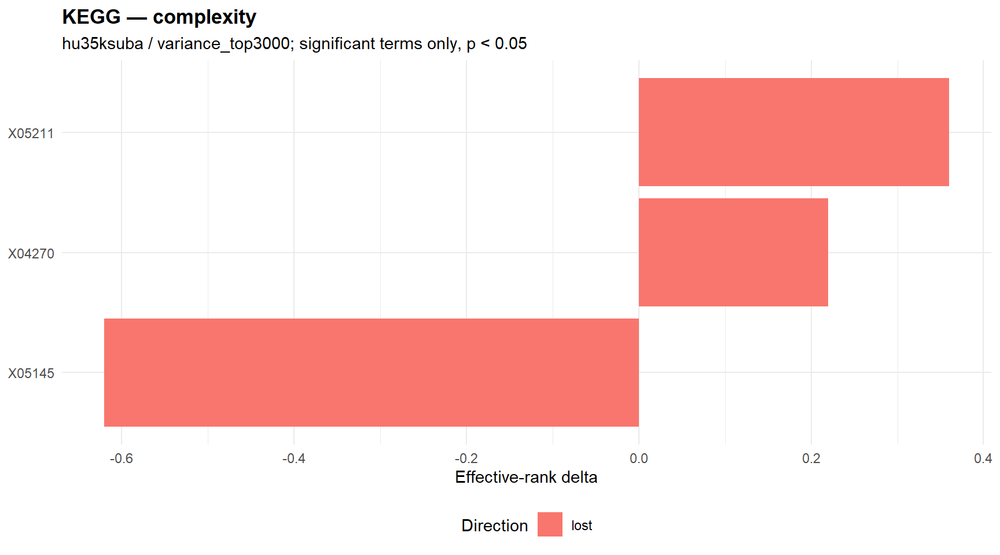
18.3.0.0.43 Entropy signal plot
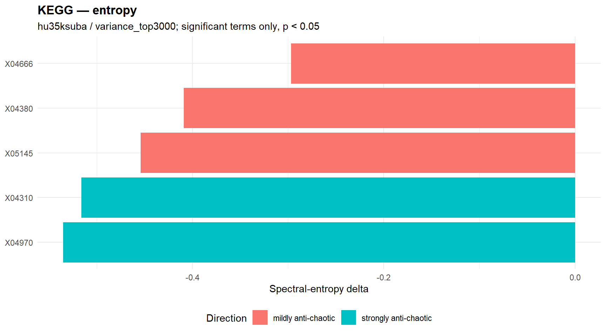
18.3.0.0.44 Significant complexity terms
| gene_set | semantic_block | n_shared_probes | effrank_delta | kappa_delta | direction | p_perm | status |
|---|---|---|---|---|---|---|---|
| X05211 | NA | 16 | 0.360 | -196.790 | lost | <0.001 | ok |
| X05145 | NA | 21 | -0.620 | -178.100 | lost | 0.040 | ok |
| X04270 | NA | 18 | 0.220 | -135.290 | lost | 0.040 | ok |
18.3.0.0.45 Significant entropy terms
| gene_set | semantic_block | n_shared_probes | spectral_delta | shannon_delta | spectral_direction | p_perm_spectral | p_perm_shannon | status |
|---|---|---|---|---|---|---|---|---|
| X04380 | NA | 27 | -0.409 | 0.002 | mildly anti-chaotic | <0.001 | NA | ok |
| X05145 | NA | 21 | -0.454 | 0.000 | mildly anti-chaotic | 0.010 | NA | ok |
| X04970 | NA | 12 | -0.535 | 0.004 | strongly anti-chaotic | 0.040 | NA | ok |
| X04310 | NA | 22 | -0.516 | -0.001 | strongly anti-chaotic | 0.040 | NA | ok |
| X04666 | NA | 19 | -0.297 | 0.001 | mildly anti-chaotic | 0.040 | NA | ok |
18.3.0.0.46 Terms significant in both engines
| gene_set | semantic_block | n_shared_probes | complexity_effrank_delta | complexity_direction | complexity_p_perm | entropy_spectral_delta | entropy_spectral_direction | entropy_p_perm_spectral | joint_rank_score |
|---|---|---|---|---|---|---|---|---|---|
| X05145 | NA | 21 | -0.620 | lost | 0.040 | -0.454 | mildly anti-chaotic | 0.010 | 3.398 |
18.3.0.0.47 Context summary
| engine | n_rows | n_gene_sets | n_significant_complexity | n_significant_entropy_spectral | median_shared_probes |
|---|---|---|---|---|---|
| complexity | 13 | 13 | 0 | 0 | 46.000 |
| entropy | 13 | 13 | 0 | 1 | 46.000 |
18.3.0.0.48 Complexity signal plot
No significant complexity terms available for plotting.
18.3.0.0.49 Entropy signal plot
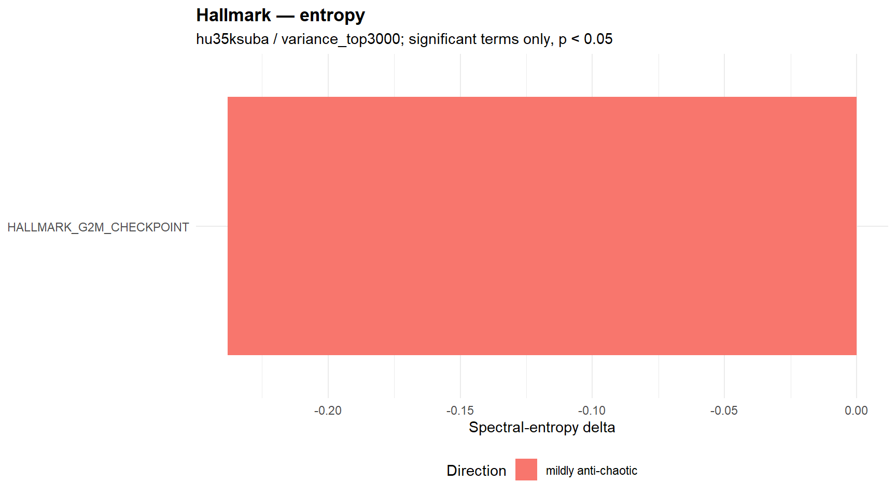
18.3.0.0.50 Significant complexity terms
No significant warehouse rows available for this section.
18.3.0.0.51 Significant entropy terms
| gene_set | semantic_block | n_shared_probes | spectral_delta | shannon_delta | spectral_direction | p_perm_spectral | p_perm_shannon | status |
|---|---|---|---|---|---|---|---|---|
| HALLMARK_G2M_CHECKPOINT | NA | 52 | -0.238 | 0.004 | mildly anti-chaotic | 0.030 | NA | ok |
18.3.0.0.52 Terms significant in both engines
No significant warehouse rows available for this section.
18.3.0.0.53 Context summary
| engine | n_rows | n_gene_sets | n_significant_complexity | n_significant_entropy_spectral | median_shared_probes |
|---|---|---|---|---|---|
| complexity | 167 | 167 | 12 | 0 | 7.000 |
| entropy | 167 | 167 | 0 | 53 | 7.000 |
18.3.0.0.54 Complexity signal plot
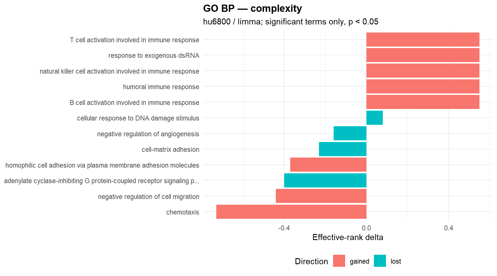
18.3.0.0.55 Entropy signal plot
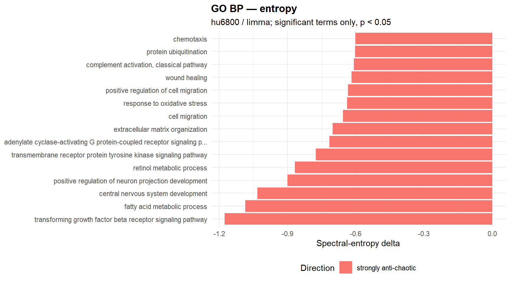
18.3.0.0.56 Significant complexity terms
| gene_set | semantic_block | n_shared_probes | effrank_delta | kappa_delta | direction | p_perm | status |
|---|---|---|---|---|---|---|---|
| negative regulation of angiogenesis | regulation of anatomical structure morphogenesis | 6 | -0.160 | -393.150 | lost | <0.001 | ok |
| homophilic cell adhesion via plasma membrane adhesion molecules | cell-cell adhesion | 6 | -0.370 | 425.550 | gained | 0.010 | ok |
| chemotaxis | chemotaxis | 5 | -0.730 | 190.120 | gained | 0.020 | ok |
| negative regulation of cell migration | regulation of cell migration | 10 | -0.440 | 1464.880 | gained | 0.020 | ok |
| cell-matrix adhesion | cell adhesion | 6 | -0.230 | -324.030 | lost | 0.020 | ok |
| T cell activation involved in immune response | cell activation involved in immune response | 5 | 0.550 | 285.720 | gained | 0.030 | ok |
| B cell activation involved in immune response | cell activation involved in immune response | 5 | 0.550 | 285.720 | gained | 0.030 | ok |
| natural killer cell activation involved in immune response | cell activation involved in immune response | 5 | 0.550 | 285.720 | gained | 0.030 | ok |
| humoral immune response | immune response | 5 | 0.550 | 285.720 | gained | 0.030 | ok |
| response to exogenous dsRNA | response to nitrogen compound | 5 | 0.550 | 285.720 | gained | 0.030 | ok |
| cellular response to DNA damage stimulus | DNA damage response | 7 | 0.080 | -1075.670 | lost | 0.030 | ok |
| adenylate cyclase-inhibiting G protein-coupled receptor signaling pathway | G protein-coupled receptor signaling pathway | 5 | -0.400 | -147.040 | lost | 0.040 | ok |
18.3.0.0.57 Significant entropy terms
| gene_set | semantic_block | n_shared_probes | spectral_delta | shannon_delta | spectral_direction | p_perm_spectral | p_perm_shannon | status |
|---|---|---|---|---|---|---|---|---|
| transforming growth factor beta receptor signaling pathway | cellular response to growth factor stimulus | 5 | -1.177 | 0.006 | strongly anti-chaotic | <0.001 | NA | ok |
| fatty acid metabolic process | fatty acid metabolic process | 8 | -1.086 | -0.004 | strongly anti-chaotic | <0.001 | NA | ok |
| positive regulation of neuron projection development | regulation of plasma membrane bounded cell projection organization | 8 | -0.900 | -0.006 | strongly anti-chaotic | <0.001 | NA | ok |
| retinol metabolic process | alcohol metabolic process | 7 | -0.867 | -0.018 | strongly anti-chaotic | <0.001 | NA | ok |
| transmembrane receptor protein tyrosine kinase signaling pathway | cell surface receptor protein tyrosine kinase signaling pathway | 6 | -0.776 | -0.004 | strongly anti-chaotic | <0.001 | NA | ok |
| adenylate cyclase-activating G protein-coupled receptor signaling pathway | G protein-coupled receptor signaling pathway | 5 | -0.716 | -0.005 | strongly anti-chaotic | <0.001 | NA | ok |
| cell migration | cell migration | 13 | -0.656 | 0.003 | strongly anti-chaotic | <0.001 | NA | ok |
| response to oxidative stress | response to stress | 7 | -0.638 | 0.003 | strongly anti-chaotic | <0.001 | NA | ok |
| positive regulation of cell migration | positive regulation of cell migration | 15 | -0.634 | 0.004 | strongly anti-chaotic | <0.001 | NA | ok |
| wound healing | wound healing | 6 | -0.619 | 0.005 | strongly anti-chaotic | <0.001 | NA | ok |
| chemotaxis | chemotaxis | 5 | -0.602 | 0.002 | strongly anti-chaotic | <0.001 | NA | ok |
| response to cytokine | response to cytokine | 5 | -0.555 | 0.007 | strongly anti-chaotic | <0.001 | NA | ok |
| insulin receptor signaling pathway | cellular response to nitrogen compound | 6 | -0.550 | -0.008 | strongly anti-chaotic | <0.001 | NA | ok |
| integrin-mediated signaling pathway | cell surface receptor signaling pathway | 8 | -0.539 | 0.008 | strongly anti-chaotic | <0.001 | NA | ok |
| positive regulation of protein kinase B signaling | positive regulation of intracellular signal transduction | 10 | -0.529 | 0.001 | strongly anti-chaotic | <0.001 | NA | ok |
18.3.0.0.58 Terms significant in both engines
| gene_set | semantic_block | n_shared_probes | complexity_effrank_delta | complexity_direction | complexity_p_perm | entropy_spectral_delta | entropy_spectral_direction | entropy_p_perm_spectral | joint_rank_score |
|---|---|---|---|---|---|---|---|---|---|
| chemotaxis | chemotaxis | 5 | -0.730 | gained | 0.020 | -0.602 | strongly anti-chaotic | <0.001 | 309.352 |
| homophilic cell adhesion via plasma membrane adhesion molecules | cell-cell adhesion | 6 | -0.370 | gained | 0.010 | -0.397 | mildly anti-chaotic | 0.010 | 4.000 |
18.3.0.0.59 GO semantic clusters
| semantic_cluster_id | semantic_block_name | n_rows | n_terms | n_sig_complexity | n_sig_entropy_spectral | mean_shared_probes |
|---|---|---|---|---|---|---|
| BP_GO_0007186_2 | G protein-coupled receptor signaling pathway | 6 | 3 | 1 | 1 | 7.333 |
| BP_GO_0006631_6 | fatty acid metabolic process | 4 | 2 | 0 | 2 | 5.500 |
| BP_GO_0006955_1 | immune response | 4 | 2 | 1 | 1 | 12.500 |
| BP_GO_0022603_2 | regulation of anatomical structure morphogenesis | 4 | 2 | 1 | 1 | 5.500 |
| BP_GO_0070887_1 | cellular response to chemical stimulus | 4 | 2 | 0 | 2 | 6.500 |
| BP_GO_0006935_1 | chemotaxis | 2 | 1 | 1 | 1 | 5.000 |
| BP_GO_0098609_1 | cell-cell adhesion | 2 | 1 | 1 | 1 | 6.000 |
| BP_GO_0006325_2 | chromatin organization | 4 | 2 | 0 | 1 | 9.500 |
| BP_GO_0007166_1 | cell surface receptor signaling pathway | 4 | 2 | 0 | 1 | 8.500 |
| BP_GO_0016043_1 | cellular component organization | 4 | 2 | 0 | 1 | 5.500 |
| BP_GO_0035556_1 | intracellular signal transduction | 4 | 2 | 0 | 1 | 6.500 |
| BP_GO_0098655_3 | monoatomic cation transmembrane transport | 4 | 2 | 0 | 1 | 5.000 |
| BP_GO_1902533_1 | positive regulation of intracellular signal transduction | 4 | 2 | 0 | 1 | 9.500 |
| BP_GO_0002263_4 | cell activation involved in immune response | 2 | 1 | 1 | 0 | 5.000 |
| BP_GO_0002263_5 | cell activation involved in immune response | 2 | 1 | 1 | 0 | 5.000 |
18.3.0.0.60 Context summary
| engine | n_rows | n_gene_sets | n_significant_complexity | n_significant_entropy_spectral | median_shared_probes |
|---|---|---|---|---|---|
| complexity | 98 | 98 | 7 | 0 | 9.000 |
| entropy | 98 | 98 | 0 | 23 | 9.000 |
18.3.0.0.61 Complexity signal plot
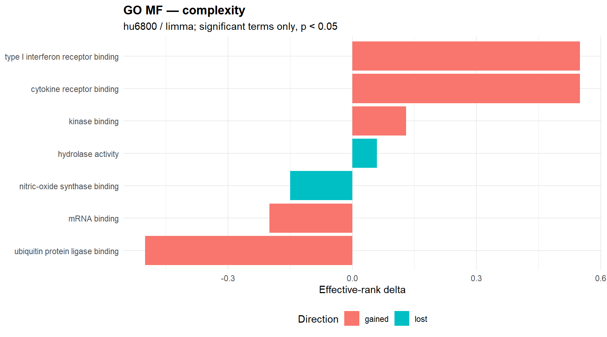
18.3.0.0.62 Entropy signal plot
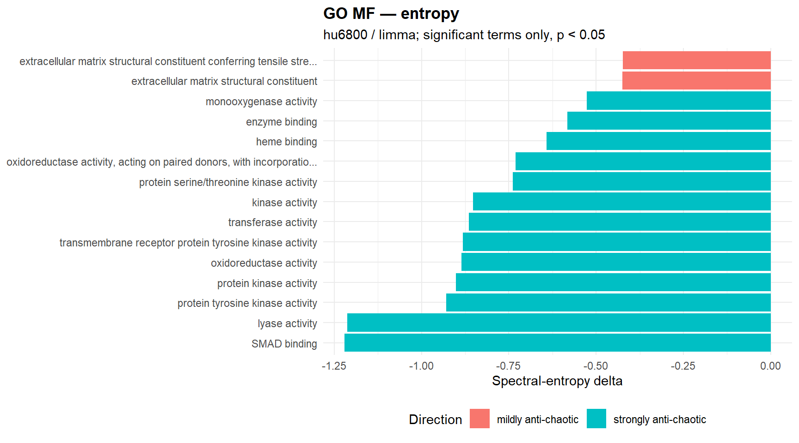
18.3.0.0.63 Significant complexity terms
| gene_set | semantic_block | n_shared_probes | effrank_delta | kappa_delta | direction | p_perm | status |
|---|---|---|---|---|---|---|---|
| ubiquitin protein ligase binding | enzyme binding | 10 | -0.500 | 8914.560 | gained | <0.001 | ok |
| mRNA binding | RNA binding | 9 | -0.200 | 72378.820 | gained | <0.001 | ok |
| kinase binding | enzyme binding | 6 | 0.130 | 316.920 | gained | 0.010 | ok |
| cytokine receptor binding | signaling receptor binding | 5 | 0.550 | 285.720 | gained | 0.030 | ok |
| type I interferon receptor binding | protein-containing complex binding | 5 | 0.550 | 285.720 | gained | 0.030 | ok |
| nitric-oxide synthase binding | enzyme binding | 5 | -0.150 | -151.270 | lost | 0.040 | ok |
| hydrolase activity | hydrolase activity | 43 | 0.060 | -113.020 | lost | 0.040 | ok |
18.3.0.0.64 Significant entropy terms
| gene_set | semantic_block | n_shared_probes | spectral_delta | shannon_delta | spectral_direction | p_perm_spectral | p_perm_shannon | status |
|---|---|---|---|---|---|---|---|---|
| SMAD binding | protein binding | 7 | -1.220 | 0.000 | strongly anti-chaotic | <0.001 | NA | ok |
| lyase activity | catalytic activity | 6 | -1.213 | -0.007 | strongly anti-chaotic | <0.001 | NA | ok |
| protein tyrosine kinase activity | protein kinase activity | 7 | -0.929 | -0.002 | strongly anti-chaotic | <0.001 | NA | ok |
| protein kinase activity | protein kinase activity | 14 | -0.901 | 0.002 | strongly anti-chaotic | <0.001 | NA | ok |
| oxidoreductase activity | oxidoreductase activity | 17 | -0.885 | -0.004 | strongly anti-chaotic | <0.001 | NA | ok |
| transmembrane receptor protein tyrosine kinase activity | protein kinase activity | 5 | -0.881 | -0.001 | strongly anti-chaotic | <0.001 | NA | ok |
| transferase activity | transferase activity | 27 | -0.864 | 0.002 | strongly anti-chaotic | <0.001 | NA | ok |
| kinase activity | kinase activity | 15 | -0.853 | 0.002 | strongly anti-chaotic | <0.001 | NA | ok |
| protein serine/threonine kinase activity | protein serine/threonine kinase activity | 7 | -0.738 | 0.006 | strongly anti-chaotic | <0.001 | NA | ok |
| oxidoreductase activity, acting on paired donors, with incorporation or reduction of molecular oxygen | oxidoreductase activity | 9 | -0.731 | -0.008 | strongly anti-chaotic | <0.001 | NA | ok |
| heme binding | binding | 10 | -0.642 | -0.006 | strongly anti-chaotic | <0.001 | NA | ok |
| enzyme binding | enzyme binding | 23 | -0.582 | -0.002 | strongly anti-chaotic | <0.001 | NA | ok |
| monooxygenase activity | oxidoreductase activity | 9 | -0.527 | -0.006 | strongly anti-chaotic | <0.001 | NA | ok |
| extracellular matrix structural constituent | molecular_function | 13 | -0.425 | 0.007 | mildly anti-chaotic | <0.001 | NA | ok |
| protein heterodimerization activity | protein binding | 17 | -0.383 | 0.007 | mildly anti-chaotic | <0.001 | NA | ok |
18.3.0.0.65 Terms significant in both engines
| gene_set | semantic_block | n_shared_probes | complexity_effrank_delta | complexity_direction | complexity_p_perm | entropy_spectral_delta | entropy_spectral_direction | entropy_p_perm_spectral | joint_rank_score |
|---|---|---|---|---|---|---|---|---|---|
| ubiquitin protein ligase binding | enzyme binding | 10 | -0.500 | gained | <0.001 | -0.349 | mildly anti-chaotic | 0.020 | 309.352 |
18.3.0.0.66 GO semantic clusters
| semantic_cluster_id | semantic_block_name | n_rows | n_terms | n_sig_complexity | n_sig_entropy_spectral | mean_shared_probes |
|---|---|---|---|---|---|---|
| MF_GO_0004672_1 | protein kinase activity | 4 | 2 | 0 | 2 | 10.500 |
| MF_molecular_function_16 | molecular_function | 4 | 2 | 0 | 2 | 10.500 |
| MF_GO_0019899_8 | enzyme binding | 2 | 1 | 1 | 1 | 10.000 |
| MF_GO_0019899_3 | enzyme binding | 4 | 2 | 1 | 0 | 13.000 |
| MF_GO_0043169_1 | cation binding | 4 | 2 | 0 | 1 | 53.000 |
| MF_GO_0003723_4 | RNA binding | 2 | 1 | 1 | 0 | 9.000 |
| MF_GO_0003824_20 | catalytic activity | 2 | 1 | 0 | 1 | 6.000 |
| MF_GO_0004672_2 | protein kinase activity | 2 | 1 | 0 | 1 | 5.000 |
| MF_GO_0004674_1 | protein serine/threonine kinase activity | 2 | 1 | 0 | 1 | 7.000 |
| MF_GO_0005102_6 | signaling receptor binding | 2 | 1 | 1 | 0 | 5.000 |
| MF_GO_0005488_11 | binding | 2 | 1 | 0 | 1 | 10.000 |
| MF_GO_0005515_58 | protein binding | 2 | 1 | 0 | 1 | 7.000 |
| MF_GO_0005515_61 | protein binding | 2 | 1 | 0 | 1 | 17.000 |
| MF_GO_0016301_2 | kinase activity | 2 | 1 | 0 | 1 | 15.000 |
| MF_GO_0016491_11 | oxidoreductase activity | 2 | 1 | 0 | 1 | 9.000 |
18.3.0.0.67 Context summary
| engine | n_rows | n_gene_sets | n_significant_complexity | n_significant_entropy_spectral | median_shared_probes |
|---|---|---|---|---|---|
| complexity | 21 | 21 | 1 | 0 | 12.000 |
| entropy | 21 | 21 | 0 | 12 | 12.000 |
18.3.0.0.68 Complexity signal plot
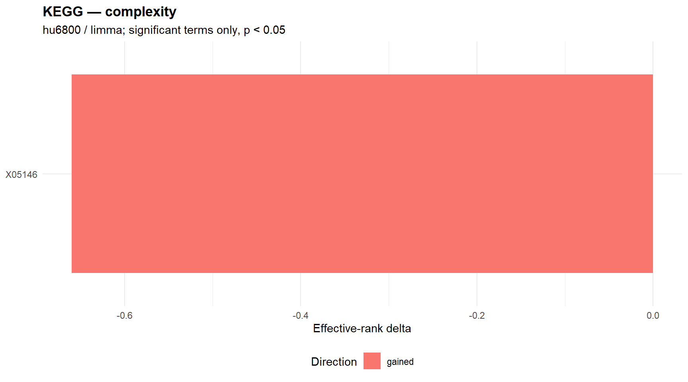
18.3.0.0.69 Entropy signal plot
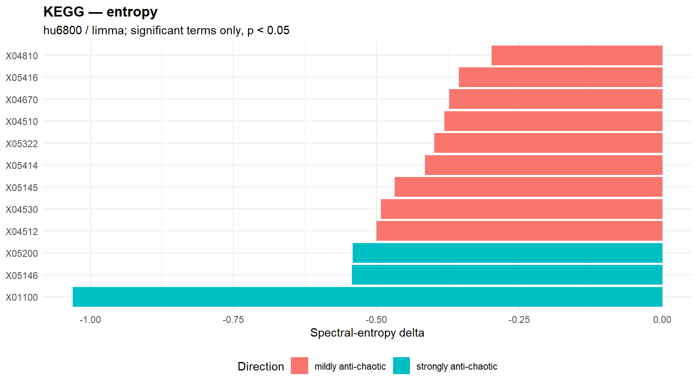
18.3.0.0.70 Significant complexity terms
| gene_set | semantic_block | n_shared_probes | effrank_delta | kappa_delta | direction | p_perm | status |
|---|---|---|---|---|---|---|---|
| X05146 | NA | 12 | -0.660 | 624.970 | gained | 0.030 | ok |
18.3.0.0.71 Significant entropy terms
| gene_set | semantic_block | n_shared_probes | spectral_delta | shannon_delta | spectral_direction | p_perm_spectral | p_perm_shannon | status |
|---|---|---|---|---|---|---|---|---|
| X01100 | NA | 26 | -1.031 | -0.004 | strongly anti-chaotic | <0.001 | NA | ok |
| X05146 | NA | 12 | -0.543 | 0.006 | strongly anti-chaotic | <0.001 | NA | ok |
| X05200 | NA | 18 | -0.542 | 0.006 | strongly anti-chaotic | <0.001 | NA | ok |
| X04512 | NA | 13 | -0.500 | 0.005 | mildly anti-chaotic | <0.001 | NA | ok |
| X04530 | NA | 11 | -0.492 | 0.008 | mildly anti-chaotic | <0.001 | NA | ok |
| X05145 | NA | 10 | -0.468 | 0.001 | mildly anti-chaotic | <0.001 | NA | ok |
| X05322 | NA | 12 | -0.399 | 0.008 | mildly anti-chaotic | <0.001 | NA | ok |
| X05414 | NA | 12 | -0.415 | 0.005 | mildly anti-chaotic | 0.010 | NA | ok |
| X04510 | NA | 32 | -0.381 | 0.008 | mildly anti-chaotic | 0.010 | NA | ok |
| X04670 | NA | 13 | -0.373 | 0.005 | mildly anti-chaotic | 0.010 | NA | ok |
| X05416 | NA | 13 | -0.356 | 0.008 | mildly anti-chaotic | 0.010 | NA | ok |
| X04810 | NA | 21 | -0.299 | 0.011 | mildly anti-chaotic | 0.020 | NA | ok |
18.3.0.0.72 Terms significant in both engines
| gene_set | semantic_block | n_shared_probes | complexity_effrank_delta | complexity_direction | complexity_p_perm | entropy_spectral_delta | entropy_spectral_direction | entropy_p_perm_spectral | joint_rank_score |
|---|---|---|---|---|---|---|---|---|---|
| X05146 | NA | 12 | -0.660 | gained | 0.030 | -0.543 | strongly anti-chaotic | <0.001 | 309.176 |
18.3.0.0.73 Context summary
| engine | n_rows | n_gene_sets | n_significant_complexity | n_significant_entropy_spectral | median_shared_probes |
|---|---|---|---|---|---|
| complexity | 4 | 4 | 0 | 0 | 21.500 |
| entropy | 4 | 4 | 0 | 1 | 21.500 |
18.3.0.0.74 Complexity signal plot
No significant complexity terms available for plotting.
18.3.0.0.75 Entropy signal plot
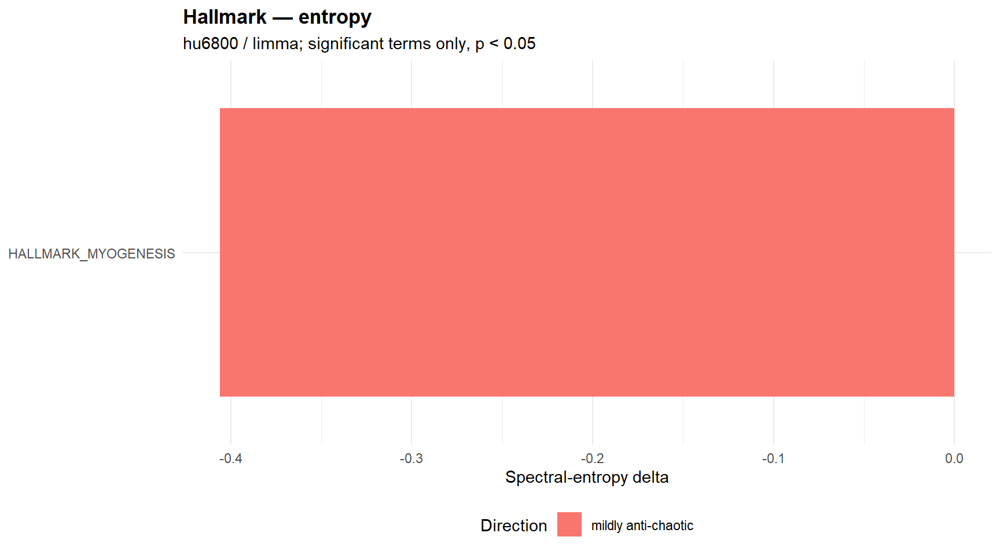
18.3.0.0.76 Significant complexity terms
No significant warehouse rows available for this section.
18.3.0.0.77 Significant entropy terms
| gene_set | semantic_block | n_shared_probes | spectral_delta | shannon_delta | spectral_direction | p_perm_spectral | p_perm_shannon | status |
|---|---|---|---|---|---|---|---|---|
| HALLMARK_MYOGENESIS | NA | 26 | -0.406 | 0.011 | mildly anti-chaotic | 0.030 | NA | ok |
18.3.0.0.78 Terms significant in both engines
No significant warehouse rows available for this section.
18.3.0.0.79 Context summary
| engine | n_rows | n_gene_sets | n_significant_complexity | n_significant_entropy_spectral | median_shared_probes |
|---|---|---|---|---|---|
| complexity | 1565 | 1565 | 69 | 0 | 9.000 |
| entropy | 1565 | 1565 | 0 | 129 | 9.000 |
18.3.0.0.80 Complexity signal plot
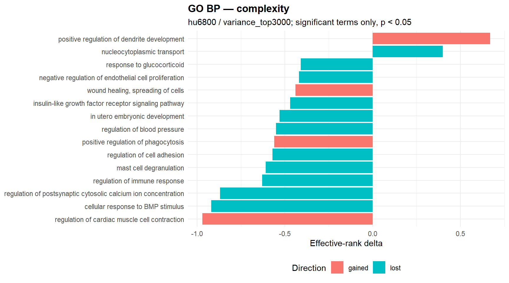
18.3.0.0.81 Entropy signal plot
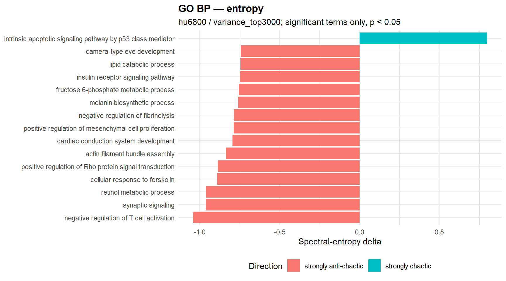
18.3.0.0.82 Significant complexity terms
| gene_set | semantic_block | n_shared_probes | effrank_delta | kappa_delta | direction | p_perm | status |
|---|---|---|---|---|---|---|---|
| positive regulation of immunoglobulin production | regulation of immune effector process | 13 | -0.350 | 450.690 | gained | <0.001 | ok |
| regulation of multicellular organismal development | regulation of multicellular organismal development | 7 | -0.340 | 962.340 | gained | <0.001 | ok |
| renal water homeostasis | regulation of body fluid levels | 9 | -0.330 | 74914.050 | gained | <0.001 | ok |
| positive regulation of actin filament polymerization | regulation of anatomical structure size | 9 | -0.330 | -149020.820 | lost | <0.001 | ok |
| glomerular filtration | system process | 6 | -0.290 | 608.280 | gained | <0.001 | ok |
| regulation of protein localization | regulation of protein localization | 20 | 0.250 | -275.050 | lost | <0.001 | ok |
| glucose import across plasma membrane | import into cell | 6 | -0.240 | -403.910 | lost | <0.001 | ok |
| oxygen transport | transport | 6 | 0.240 | 1546.150 | gained | <0.001 | ok |
| adherens junction organization | cell junction organization | 5 | -0.120 | 305.000 | gained | <0.001 | ok |
| glucose transmembrane transport | transmembrane transport | 5 | -0.100 | -272.640 | lost | <0.001 | ok |
| neurogenesis | neurogenesis | 12 | -0.060 | -847.300 | lost | <0.001 | ok |
| carbon dioxide transport | transport | 6 | 0.050 | 598.860 | gained | <0.001 | ok |
| response to mechanical stimulus | response to abiotic stimulus | 17 | -0.050 | -244.420 | lost | <0.001 | ok |
| 7-methylguanosine cap hypermethylation | RNA processing | 7 | 0.030 | 2663.850 | gained | <0.001 | ok |
| nuclear histone mRNA catabolic process | mRNA catabolic process | 7 | -0.020 | 1283.960 | gained | <0.001 | ok |
18.3.0.0.83 Significant entropy terms
| gene_set | semantic_block | n_shared_probes | spectral_delta | shannon_delta | spectral_direction | p_perm_spectral | p_perm_shannon | status |
|---|---|---|---|---|---|---|---|---|
| negative regulation of T cell activation | regulation of leukocyte cell-cell adhesion | 9 | -1.042 | -0.001 | strongly anti-chaotic | <0.001 | NA | ok |
| synaptic signaling | synaptic signaling | 6 | -0.962 | -0.004 | strongly anti-chaotic | <0.001 | NA | ok |
| retinol metabolic process | alcohol metabolic process | 16 | -0.960 | -0.007 | strongly anti-chaotic | <0.001 | NA | ok |
| cellular response to forskolin | cellular response to lipid | 7 | -0.893 | 0.000 | strongly anti-chaotic | <0.001 | NA | ok |
| positive regulation of Rho protein signal transduction | positive regulation of intracellular signal transduction | 8 | -0.886 | -0.001 | strongly anti-chaotic | <0.001 | NA | ok |
| actin filament bundle assembly | actin cytoskeleton organization | 8 | -0.837 | -0.005 | strongly anti-chaotic | <0.001 | NA | ok |
| cardiac conduction system development | heart development | 6 | -0.795 | -0.001 | strongly anti-chaotic | <0.001 | NA | ok |
| fructose 6-phosphate metabolic process | carbohydrate derivative metabolic process | 6 | -0.756 | -0.003 | strongly anti-chaotic | <0.001 | NA | ok |
| vasoconstriction | regulation of anatomical structure size | 6 | -0.743 | -0.001 | strongly anti-chaotic | <0.001 | NA | ok |
| response to ATP | response to nitrogen compound | 9 | -0.739 | 0.001 | strongly anti-chaotic | <0.001 | NA | ok |
| regulation of MAPK cascade | regulation of intracellular signal transduction | 8 | -0.734 | 0.000 | strongly anti-chaotic | <0.001 | NA | ok |
| retinoid metabolic process | lipid metabolic process | 18 | -0.694 | 0.003 | strongly anti-chaotic | <0.001 | NA | ok |
| positive regulation of calcium-mediated signaling | positive regulation of intracellular signal transduction | 8 | -0.693 | -0.004 | strongly anti-chaotic | <0.001 | NA | ok |
| induction of positive chemotaxis | chemotaxis | 6 | -0.689 | -0.003 | strongly anti-chaotic | <0.001 | NA | ok |
| blood circulation | blood circulation | 13 | -0.654 | -0.001 | strongly anti-chaotic | <0.001 | NA | ok |
18.3.0.0.84 Terms significant in both engines
| gene_set | semantic_block | n_shared_probes | complexity_effrank_delta | complexity_direction | complexity_p_perm | entropy_spectral_delta | entropy_spectral_direction | entropy_p_perm_spectral | joint_rank_score |
|---|---|---|---|---|---|---|---|---|---|
| regulation of cell adhesion | regulation of cell adhesion | 17 | -0.570 | lost | 0.010 | -0.505 | strongly anti-chaotic | <0.001 | 309.653 |
| regulation of immune response | regulation of immune response | 11 | -0.630 | lost | 0.010 | -0.516 | strongly anti-chaotic | 0.040 | 3.398 |
| cellular response to BMP stimulus | cellular response to growth factor stimulus | 7 | -0.920 | lost | 0.030 | -0.514 | strongly anti-chaotic | 0.040 | 2.921 |
18.3.0.0.85 GO semantic clusters
| semantic_cluster_id | semantic_block_name | n_rows | n_terms | n_sig_complexity | n_sig_entropy_spectral | mean_shared_probes |
|---|---|---|---|---|---|---|
| BP_GO_0019221_4 | cytokine-mediated signaling pathway | 14 | 7 | 1 | 1 | 13.429 |
| BP_GO_0006412_2 | translation | 12 | 6 | 1 | 1 | 37.833 |
| BP_GO_0050804_1 | modulation of chemical synaptic transmission | 12 | 6 | 0 | 2 | 11.333 |
| BP_GO_0007423_1 | sensory organ development | 10 | 5 | 0 | 2 | 7.600 |
| BP_GO_0022613_3 | ribonucleoprotein complex biogenesis | 10 | 5 | 2 | 0 | 10.400 |
| BP_GO_0006468_1 | protein phosphorylation | 8 | 4 | 0 | 2 | 20.000 |
| BP_GO_0006935_3 | chemotaxis | 8 | 4 | 0 | 2 | 6.500 |
| BP_GO_0031175_1 | neuron projection development | 8 | 4 | 1 | 1 | 14.750 |
| BP_GO_0120035_2 | regulation of plasma membrane bounded cell projection organization | 8 | 4 | 1 | 1 | 13.500 |
| BP_GO_1903522_1 | regulation of blood circulation | 8 | 4 | 0 | 2 | 9.000 |
| BP_GO_0042221_5 | response to chemical | 6 | 3 | 0 | 2 | 7.667 |
| BP_GO_0009790_8 | embryo development | 4 | 2 | 0 | 2 | 5.000 |
| BP_GO_0050808_2 | synapse organization | 4 | 2 | 0 | 2 | 8.000 |
| BP_GO_0071363_3 | cellular response to growth factor stimulus | 4 | 2 | 1 | 1 | 10.000 |
| BP_GO_0030155_1 | regulation of cell adhesion | 2 | 1 | 1 | 1 | 17.000 |
18.3.0.0.86 Context summary
| engine | n_rows | n_gene_sets | n_significant_complexity | n_significant_entropy_spectral | median_shared_probes |
|---|---|---|---|---|---|
| complexity | 532 | 532 | 21 | 0 | 10.000 |
| entropy | 532 | 532 | 0 | 49 | 10.000 |
18.3.0.0.87 Complexity signal plot
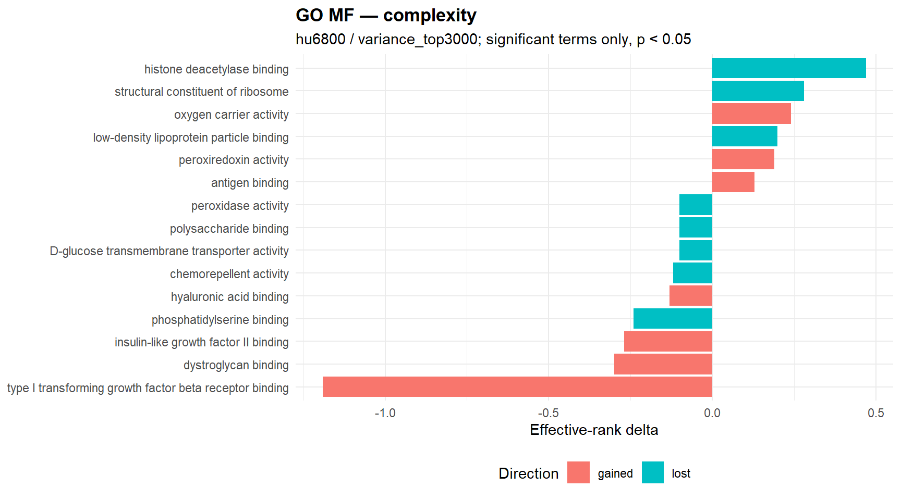
18.3.0.0.88 Entropy signal plot
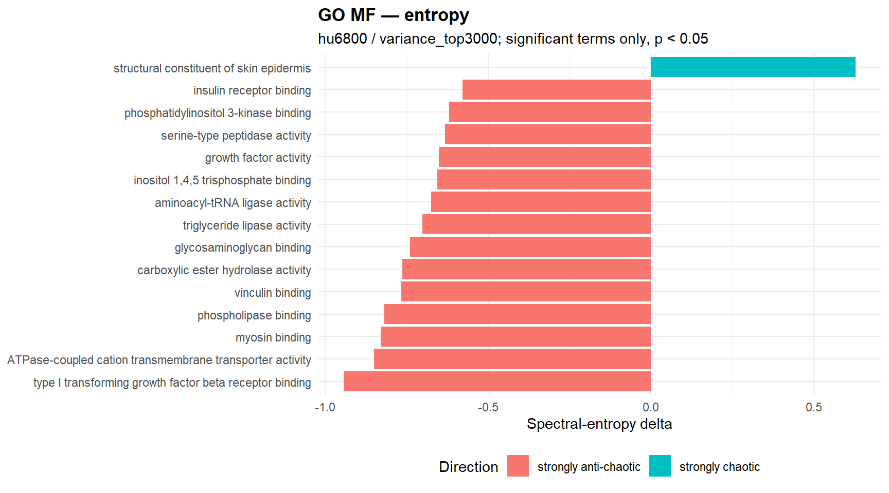
18.3.0.0.89 Significant complexity terms
| gene_set | semantic_block | n_shared_probes | effrank_delta | kappa_delta | direction | p_perm | status |
|---|---|---|---|---|---|---|---|
| histone deacetylase binding | enzyme binding | 32 | 0.470 | -158.530 | lost | <0.001 | ok |
| dystroglycan binding | protein binding | 5 | -0.300 | 329.380 | gained | <0.001 | ok |
| insulin-like growth factor II binding | protein binding | 5 | -0.270 | 1827.830 | gained | <0.001 | ok |
| phosphatidylserine binding | lipid binding | 17 | -0.240 | -273.490 | lost | <0.001 | ok |
| oxygen carrier activity | molecular_function | 6 | 0.240 | 1546.150 | gained | <0.001 | ok |
| low-density lipoprotein particle binding | protein-containing complex binding | 7 | 0.200 | -701.380 | lost | <0.001 | ok |
| hyaluronic acid binding | carbohydrate derivative binding | 5 | -0.130 | 351.540 | gained | <0.001 | ok |
| D-glucose transmembrane transporter activity | transmembrane transporter activity | 5 | -0.100 | -272.640 | lost | <0.001 | ok |
| insulin-like growth factor I binding | protein binding | 7 | -0.030 | 3064.870 | gained | <0.001 | ok |
| RNA polymerase II core promoter sequence-specific DNA binding | DNA binding | 17 | 0.090 | -293.320 | lost | 0.010 | ok |
| chemorepellent activity | molecular function regulator activity | 6 | -0.120 | -266.590 | lost | 0.020 | ok |
| glycosyltransferase activity | transferase activity | 29 | -0.090 | 151.970 | gained | 0.020 | ok |
| microtubule binding | cytoskeletal protein binding | 51 | 0.060 | -62.140 | lost | 0.020 | ok |
| type I transforming growth factor beta receptor binding | signaling receptor binding | 6 | -1.190 | 273.600 | gained | 0.030 | ok |
| peroxidase activity | oxidoreductase activity | 17 | -0.100 | -168.410 | lost | 0.030 | ok |
18.3.0.0.90 Significant entropy terms
| gene_set | semantic_block | n_shared_probes | spectral_delta | shannon_delta | spectral_direction | p_perm_spectral | p_perm_shannon | status |
|---|---|---|---|---|---|---|---|---|
| type I transforming growth factor beta receptor binding | signaling receptor binding | 6 | -0.943 | -0.002 | strongly anti-chaotic | <0.001 | NA | ok |
| ATPase-coupled cation transmembrane transporter activity | active transmembrane transporter activity | 5 | -0.850 | -0.001 | strongly anti-chaotic | <0.001 | NA | ok |
| phospholipase binding | enzyme binding | 11 | -0.819 | -0.001 | strongly anti-chaotic | <0.001 | NA | ok |
| vinculin binding | cytoskeletal protein binding | 5 | -0.767 | -0.004 | strongly anti-chaotic | <0.001 | NA | ok |
| growth factor activity | molecular function regulator activity | 45 | -0.651 | 0.007 | strongly anti-chaotic | <0.001 | NA | ok |
| serine-type peptidase activity | peptidase activity | 28 | -0.632 | 0.014 | strongly anti-chaotic | <0.001 | NA | ok |
| phosphatidylinositol 3-kinase binding | protein binding | 5 | -0.619 | -0.003 | strongly anti-chaotic | <0.001 | NA | ok |
| SMAD binding | protein binding | 22 | -0.509 | 0.004 | strongly anti-chaotic | <0.001 | NA | ok |
| heparin binding | carbohydrate derivative binding | 51 | -0.500 | 0.005 | mildly anti-chaotic | <0.001 | NA | ok |
| estrogen 16-alpha-hydroxylase activity | oxidoreductase activity | 6 | -0.489 | -0.019 | mildly anti-chaotic | <0.001 | NA | ok |
| estrogen 2-hydroxylase activity | oxidoreductase activity | 7 | -0.435 | -0.017 | mildly anti-chaotic | <0.001 | NA | ok |
| steroid hydroxylase activity | oxidoreductase activity | 10 | -0.385 | -0.011 | mildly anti-chaotic | <0.001 | NA | ok |
| peptidase activator activity | enzyme regulator activity | 5 | -0.377 | 0.007 | mildly anti-chaotic | <0.001 | NA | ok |
| caffeine oxidase activity | oxidoreductase activity | 6 | -0.361 | -0.009 | mildly anti-chaotic | <0.001 | NA | ok |
| nitric-oxide synthase binding | enzyme binding | 11 | -0.343 | 0.007 | mildly anti-chaotic | <0.001 | NA | ok |
18.3.0.0.91 Terms significant in both engines
| gene_set | semantic_block | n_shared_probes | complexity_effrank_delta | complexity_direction | complexity_p_perm | entropy_spectral_delta | entropy_spectral_direction | entropy_p_perm_spectral | joint_rank_score |
|---|---|---|---|---|---|---|---|---|---|
| type I transforming growth factor beta receptor binding | signaling receptor binding | 6 | -1.190 | gained | 0.030 | -0.943 | strongly anti-chaotic | <0.001 | 309.176 |
18.3.0.0.92 GO semantic clusters
| semantic_cluster_id | semantic_block_name | n_rows | n_terms | n_sig_complexity | n_sig_entropy_spectral | mean_shared_probes |
|---|---|---|---|---|---|---|
| MF_GO_0098772_3 | molecular function regulator activity | 14 | 7 | 1 | 1 | 32.286 |
| MF_GO_0005515_11 | protein binding | 6 | 3 | 2 | 0 | 5.667 |
| MF_GO_0005102_4 | signaling receptor binding | 4 | 2 | 1 | 1 | 5.500 |
| MF_GO_0008092_2 | cytoskeletal protein binding | 4 | 2 | 0 | 2 | 11.500 |
| MF_GO_0008233_7 | peptidase activity | 4 | 2 | 0 | 2 | 33.000 |
| MF_GO_0016491_35 | oxidoreductase activity | 4 | 2 | 0 | 2 | 6.500 |
| MF_GO_0097367_3 | carbohydrate derivative binding | 4 | 2 | 1 | 1 | 5.000 |
| MF_molecular_function_16 | molecular_function | 4 | 2 | 0 | 2 | 35.500 |
| MF_molecular_function_18 | molecular_function | 4 | 2 | 1 | 1 | 5.500 |
| MF_GO_0030234_5 | enzyme regulator activity | 12 | 6 | 0 | 1 | 16.833 |
| MF_GO_0003677_3 | DNA binding | 8 | 4 | 1 | 0 | 45.750 |
| MF_GO_0008233_1 | peptidase activity | 8 | 4 | 0 | 1 | 32.750 |
| MF_GO_0005515_17 | protein binding | 6 | 3 | 0 | 1 | 40.333 |
| MF_GO_0019899_4 | enzyme binding | 6 | 3 | 0 | 1 | 14.667 |
| MF_GO_0005515_58 | protein binding | 4 | 2 | 0 | 1 | 13.500 |
18.3.0.0.93 Context summary
| engine | n_rows | n_gene_sets | n_significant_complexity | n_significant_entropy_spectral | median_shared_probes |
|---|---|---|---|---|---|
| complexity | 57 | 57 | 1 | 0 | 46.000 |
| entropy | 57 | 57 | 0 | 3 | 46.000 |
18.3.0.0.94 Complexity signal plot
18.3.0.0.95 Entropy signal plot
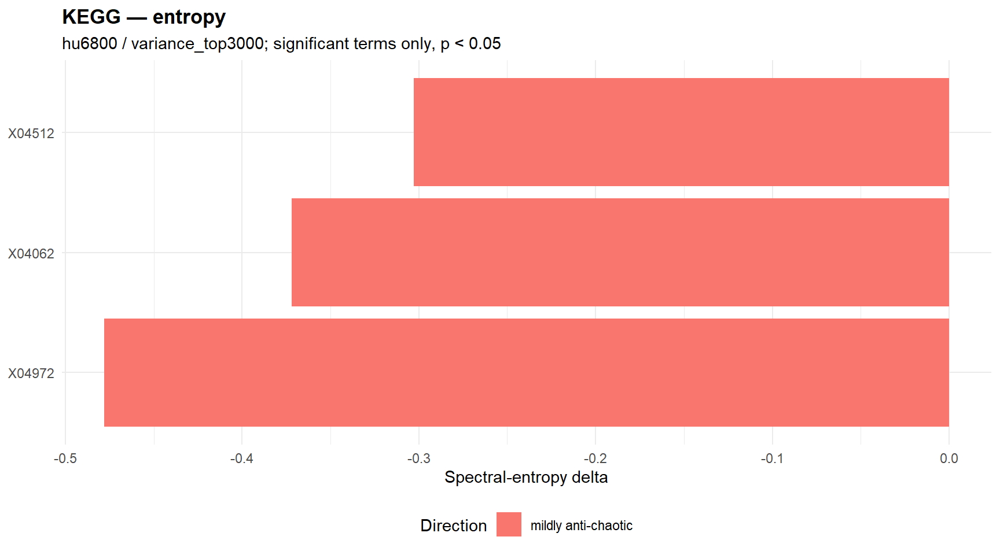
18.3.0.0.96 Significant complexity terms
| gene_set | semantic_block | n_shared_probes | effrank_delta | kappa_delta | direction | p_perm | status |
|---|---|---|---|---|---|---|---|
| X04110 | NA | 46 | 0.010 | -61.880 | lost | <0.001 | ok |
18.3.0.0.97 Significant entropy terms
| gene_set | semantic_block | n_shared_probes | spectral_delta | shannon_delta | spectral_direction | p_perm_spectral | p_perm_shannon | status |
|---|---|---|---|---|---|---|---|---|
| X04972 | NA | 42 | -0.478 | 0.010 | mildly anti-chaotic | <0.001 | NA | ok |
| X04062 | NA | 65 | -0.372 | 0.000 | mildly anti-chaotic | 0.020 | NA | ok |
| X04512 | NA | 48 | -0.303 | 0.007 | mildly anti-chaotic | 0.020 | NA | ok |
18.3.0.0.98 Terms significant in both engines
No significant warehouse rows available for this section.
18.3.0.0.99 Context summary
| engine | n_rows | n_gene_sets | n_significant_complexity | n_significant_entropy_spectral | median_shared_probes |
|---|---|---|---|---|---|
| complexity | 13 | 13 | 0 | 0 | 84.000 |
| entropy | 13 | 13 | 0 | 0 | 84.000 |
18.3.0.0.100 Complexity signal plot
No significant complexity terms available for plotting.
18.3.0.0.101 Entropy signal plot
No significant entropy terms available for plotting.
18.3.0.0.102 Significant complexity terms
No significant warehouse rows available for this section.
18.3.0.0.103 Significant entropy terms
No significant warehouse rows available for this section.
18.3.0.0.104 Terms significant in both engines
No significant warehouse rows available for this section.
18.4 Skipped gene-set summary
| chip | filter_regime | gene_set_mode | engine | reason | n_skipped |
|---|---|---|---|---|---|
| hu35ksuba | limma | GO_BP | complexity | usable gene-set probes below biological admissibility threshold: 3 < 5 | 356 |
| hu35ksuba | limma | GO_BP | complexity | usable gene-set probes below biological admissibility threshold: 4 < 5 | 327 |
| hu35ksuba | limma | GO_BP | complexity | usable gene-set probes below biological admissibility threshold: 2 < 5 | 308 |
| hu35ksuba | limma | GO_BP | complexity | usable gene-set probes below biological admissibility threshold: 1 < 5 | 152 |
| hu35ksuba | limma | GO_BP | complexity | usable gene-set probes below biological admissibility threshold: 0 < 5 | 47 |
| hu35ksuba | limma | GO_BP | entropy | usable gene-set probes below biological admissibility threshold: 3 < 5 | 356 |
| hu35ksuba | limma | GO_BP | entropy | usable gene-set probes below biological admissibility threshold: 4 < 5 | 327 |
| hu35ksuba | limma | GO_BP | entropy | usable gene-set probes below biological admissibility threshold: 2 < 5 | 308 |
| hu35ksuba | limma | GO_BP | entropy | usable gene-set probes below biological admissibility threshold: 1 < 5 | 152 |
| hu35ksuba | limma | GO_BP | entropy | usable gene-set probes below biological admissibility threshold: 0 < 5 | 47 |
| hu35ksuba | limma | GO_MF | complexity | usable gene-set probes below biological admissibility threshold: 2 < 5 | 103 |
| hu35ksuba | limma | GO_MF | complexity | usable gene-set probes below biological admissibility threshold: 3 < 5 | 102 |
| hu35ksuba | limma | GO_MF | complexity | usable gene-set probes below biological admissibility threshold: 4 < 5 | 89 |
| hu35ksuba | limma | GO_MF | complexity | usable gene-set probes below biological admissibility threshold: 1 < 5 | 51 |
| hu35ksuba | limma | GO_MF | complexity | usable gene-set probes below biological admissibility threshold: 0 < 5 | 11 |
| hu35ksuba | limma | GO_MF | entropy | usable gene-set probes below biological admissibility threshold: 2 < 5 | 103 |
| hu35ksuba | limma | GO_MF | entropy | usable gene-set probes below biological admissibility threshold: 3 < 5 | 102 |
| hu35ksuba | limma | GO_MF | entropy | usable gene-set probes below biological admissibility threshold: 4 < 5 | 89 |
| hu35ksuba | limma | GO_MF | entropy | usable gene-set probes below biological admissibility threshold: 1 < 5 | 51 |
| hu35ksuba | limma | GO_MF | entropy | usable gene-set probes below biological admissibility threshold: 0 < 5 | 11 |
| hu35ksuba | limma | KEGG | complexity | usable gene-set probes below biological admissibility threshold: 5 < 10 | 1 |
| hu35ksuba | limma | KEGG | entropy | usable gene-set probes below biological admissibility threshold: 5 < 10 | 1 |
| hu35ksuba | variance_top3000 | GO_BP | complexity | usable gene-set probes below biological admissibility threshold: 3 < 5 | 355 |
| hu35ksuba | variance_top3000 | GO_BP | complexity | usable gene-set probes below biological admissibility threshold: 2 < 5 | 310 |
| hu35ksuba | variance_top3000 | GO_BP | complexity | usable gene-set probes below biological admissibility threshold: 4 < 5 | 285 |
| hu35ksuba | variance_top3000 | GO_BP | complexity | usable gene-set probes below biological admissibility threshold: 1 < 5 | 191 |
| hu35ksuba | variance_top3000 | GO_BP | complexity | usable gene-set probes below biological admissibility threshold: 0 < 5 | 54 |
| hu35ksuba | variance_top3000 | GO_BP | entropy | usable gene-set probes below biological admissibility threshold: 3 < 5 | 355 |
| hu35ksuba | variance_top3000 | GO_BP | entropy | usable gene-set probes below biological admissibility threshold: 2 < 5 | 310 |
| hu35ksuba | variance_top3000 | GO_BP | entropy | usable gene-set probes below biological admissibility threshold: 4 < 5 | 285 |
| hu35ksuba | variance_top3000 | GO_BP | entropy | usable gene-set probes below biological admissibility threshold: 1 < 5 | 191 |
| hu35ksuba | variance_top3000 | GO_BP | entropy | usable gene-set probes below biological admissibility threshold: 0 < 5 | 54 |
| hu35ksuba | variance_top3000 | GO_MF | complexity | usable gene-set probes below biological admissibility threshold: 3 < 5 | 141 |
| hu35ksuba | variance_top3000 | GO_MF | complexity | usable gene-set probes below biological admissibility threshold: 4 < 5 | 86 |
| hu35ksuba | variance_top3000 | GO_MF | complexity | usable gene-set probes below biological admissibility threshold: 2 < 5 | 76 |
| hu35ksuba | variance_top3000 | GO_MF | complexity | usable gene-set probes below biological admissibility threshold: 1 < 5 | 75 |
| hu35ksuba | variance_top3000 | GO_MF | complexity | usable gene-set probes below biological admissibility threshold: 0 < 5 | 14 |
| hu35ksuba | variance_top3000 | GO_MF | entropy | usable gene-set probes below biological admissibility threshold: 3 < 5 | 141 |
| hu35ksuba | variance_top3000 | GO_MF | entropy | usable gene-set probes below biological admissibility threshold: 4 < 5 | 86 |
| hu35ksuba | variance_top3000 | GO_MF | entropy | usable gene-set probes below biological admissibility threshold: 2 < 5 | 76 |
| hu35ksuba | variance_top3000 | GO_MF | entropy | usable gene-set probes below biological admissibility threshold: 1 < 5 | 75 |
| hu35ksuba | variance_top3000 | GO_MF | entropy | usable gene-set probes below biological admissibility threshold: 0 < 5 | 14 |
| hu35ksuba | variance_top3000 | KEGG | complexity | usable gene-set probes below biological admissibility threshold: 7 < 10 | 1 |
| hu35ksuba | variance_top3000 | KEGG | complexity | usable gene-set probes below biological admissibility threshold: 9 < 10 | 1 |
| hu35ksuba | variance_top3000 | KEGG | entropy | usable gene-set probes below biological admissibility threshold: 7 < 10 | 1 |
| hu35ksuba | variance_top3000 | KEGG | entropy | usable gene-set probes below biological admissibility threshold: 9 < 10 | 1 |
| hu6800 | limma | GO_BP | complexity | usable gene-set probes below biological admissibility threshold: 0 < 5 | 1111 |
| hu6800 | limma | GO_BP | complexity | usable gene-set probes below biological admissibility threshold: 1 < 5 | 691 |
| hu6800 | limma | GO_BP | complexity | usable gene-set probes below biological admissibility threshold: 2 < 5 | 310 |
| hu6800 | limma | GO_BP | complexity | usable gene-set probes below biological admissibility threshold: 3 < 5 | 121 |
| hu6800 | limma | GO_BP | complexity | usable gene-set probes below biological admissibility threshold: 4 < 5 | 83 |
| hu6800 | limma | GO_BP | entropy | usable gene-set probes below biological admissibility threshold: 0 < 5 | 1111 |
| hu6800 | limma | GO_BP | entropy | usable gene-set probes below biological admissibility threshold: 1 < 5 | 691 |
| hu6800 | limma | GO_BP | entropy | usable gene-set probes below biological admissibility threshold: 2 < 5 | 310 |
| hu6800 | limma | GO_BP | entropy | usable gene-set probes below biological admissibility threshold: 3 < 5 | 121 |
| hu6800 | limma | GO_BP | entropy | usable gene-set probes below biological admissibility threshold: 4 < 5 | 83 |
| hu6800 | limma | GO_MF | complexity | usable gene-set probes below biological admissibility threshold: 0 < 5 | 392 |
| hu6800 | limma | GO_MF | complexity | usable gene-set probes below biological admissibility threshold: 1 < 5 | 249 |
| hu6800 | limma | GO_MF | complexity | usable gene-set probes below biological admissibility threshold: 2 < 5 | 74 |
| hu6800 | limma | GO_MF | complexity | usable gene-set probes below biological admissibility threshold: 3 < 5 | 53 |
| hu6800 | limma | GO_MF | complexity | usable gene-set probes below biological admissibility threshold: 4 < 5 | 25 |
| hu6800 | limma | GO_MF | entropy | usable gene-set probes below biological admissibility threshold: 0 < 5 | 392 |
| hu6800 | limma | GO_MF | entropy | usable gene-set probes below biological admissibility threshold: 1 < 5 | 249 |
| hu6800 | limma | GO_MF | entropy | usable gene-set probes below biological admissibility threshold: 2 < 5 | 74 |
| hu6800 | limma | GO_MF | entropy | usable gene-set probes below biological admissibility threshold: 3 < 5 | 53 |
| hu6800 | limma | GO_MF | entropy | usable gene-set probes below biological admissibility threshold: 4 < 5 | 25 |
| hu6800 | limma | KEGG | complexity | usable gene-set probes below biological admissibility threshold: 4 < 10 | 10 |
| hu6800 | limma | KEGG | complexity | usable gene-set probes below biological admissibility threshold: 7 < 10 | 8 |
| hu6800 | limma | KEGG | complexity | usable gene-set probes below biological admissibility threshold: 6 < 10 | 5 |
| hu6800 | limma | KEGG | complexity | usable gene-set probes below biological admissibility threshold: 3 < 10 | 3 |
| hu6800 | limma | KEGG | complexity | usable gene-set probes below biological admissibility threshold: 5 < 10 | 3 |
| hu6800 | limma | KEGG | complexity | usable gene-set probes below biological admissibility threshold: 9 < 10 | 3 |
| hu6800 | limma | KEGG | complexity | usable gene-set probes below biological admissibility threshold: 8 < 10 | 2 |
| hu6800 | limma | KEGG | complexity | usable gene-set probes below biological admissibility threshold: 1 < 10 | 1 |
| hu6800 | limma | KEGG | complexity | usable gene-set probes below biological admissibility threshold: 2 < 10 | 1 |
18.5 Interpretation note
These panels are intended to support exploratory biological reading of structurally characterized tumor states. Stronger interpretive priority should be given to signals that recur within a chip across filtering regimes, and then to patterns that recur across chips, engines, and semantic clusters. Results should not be interpreted as pooled chip-level or pooled filter-level evidence unless a later concordance module explicitly evaluates that recurrence.